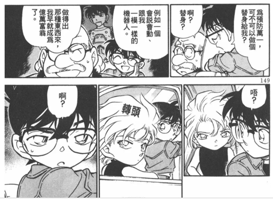

一楼献给度娘。
本来是想做名柯时间线汇总的，但是分析过程中，找到了一个大瓜，不得不先分享为快。
在这里先给下我的时间线划分依据：
灰原哀登场后时间开始转动，本文的时间线以1月1号发生的竞技场事件作为1号案件，按照漫画顺序进行编号。漫画中的案件并非线性的，本文会提炼案件中的信息作为参考依据。其中，关于穿着的部分，考量不会特别大，更多还是会从人物的话出发，毕竟漫画中大冬天穿短袖的场面很多（人均超人），后文也会摘录部分作为参考。
需要说明的是：
1.尽管没有对灰原哀出场之前的事件做一个汇总，但本文的推理过程中，涉及到人物关系相关的重要线索，依然会回顾这之前的案件，以寻找是否存在时间BUG。例如案件11和服部平次得知柯南身份的两次案件。
2.要正确排序事件，一个很重要的依据是人物的性格态度发展，特别是灰原哀的态度转变，我认为整部漫画涉及到灰原的剧情基本都是线性的，不然会OOC。以此为依据可以判断部分剧情的时间，并作证衣着并不是反应季节时间的关键（参考案件6）。警视厅人物的关系发展同样可以作为参考，例如也在案件6中的高佐。
3.灰原哀登场后的柯兰组合的剧情，由于时间冲突，我认为有些可能发生在灰原哀登场之前，例如案件11，本文会具体说明。
我将按照若干个案件为一组上传，其中值得特别注意的案件会在每次开头进行强调，可以重点关注。
这个帖子将不定时更新，由于发现了一个大瓜，所以先分享为快。后面可能过好几天才会正式开始更新时间线。
本来是想做名柯时间线汇总的，但是分析过程中，找到了一个大瓜，不得不先分享为快。
在这里先给下我的时间线划分依据：
灰原哀登场后时间开始转动，本文的时间线以1月1号发生的竞技场事件作为1号案件，按照漫画顺序进行编号。漫画中的案件并非线性的，本文会提炼案件中的信息作为参考依据。其中，关于穿着的部分，考量不会特别大，更多还是会从人物的话出发，毕竟漫画中大冬天穿短袖的场面很多（人均超人），后文也会摘录部分作为参考。
需要说明的是：
1.尽管没有对灰原哀出场之前的事件做一个汇总，但本文的推理过程中，涉及到人物关系相关的重要线索，依然会回顾这之前的案件，以寻找是否存在时间BUG。例如案件11和服部平次得知柯南身份的两次案件。
2.要正确排序事件，一个很重要的依据是人物的性格态度发展，特别是灰原哀的态度转变，我认为整部漫画涉及到灰原的剧情基本都是线性的，不然会OOC。以此为依据可以判断部分剧情的时间，并作证衣着并不是反应季节时间的关键（参考案件6）。警视厅人物的关系发展同样可以作为参考，例如也在案件6中的高佐。
3.灰原哀登场后的柯兰组合的剧情，由于时间冲突，我认为有些可能发生在灰原哀登场之前，例如案件11，本文会具体说明。
我将按照若干个案件为一组上传，其中值得特别注意的案件会在每次开头进行强调，可以重点关注。
这个帖子将不定时更新，由于发现了一个大瓜，所以先分享为快。后面可能过好几天才会正式开始更新时间线。
cy
cy
cy
吧友们，我来了。之前关于影子设计师的案件，在后文有了call back，只能算作柯南0年发生的事件了，所以我把前面几楼删除了。目前我看到漫画第54卷。本来满月之前的时间线还是能自圆其说的，但是由于水无篇开始有太多意外，柯南世界线的时间出现了太多不可调和的矛盾，我决定先放下继续研究时间线的念头。在以后哪天感兴趣了，会继续研读。（如果不是翻译的问题的话，不过日期翻译应该不会错）
我将把我目前得到的时间线进行分享，从卷18 File 6 转校生开始到卷54 File 2为止总计105个案件，如图所示，确实是有货的，大家可以放心（这张图内容可以不用看，我后面会详细说明）。
水无篇开始时间无法统一的关键原因在于案件89 水无登场时提到的两个月内和10月份以及本堂瑛祐出场篇章中各种1月，2月的具体时间。这与柯南始终保持一年级学生的身份相违背。在这种情况下，73老贼漫画的时间线有两种选择：
1.不用去看他给的任何具体时间，只考虑案件和案件之间的联系，什么寒暑、假期都不要管。今天是1月1日，明天是12月1日也不要管。漫画顺序就是时间顺序。这种情况下，日期给人的印象会很割裂，但没有解决办法，本贴的作用就变成主要就是给大家排一排，哪些案件和哪些人物有关了。
2.承认漫画中的时间线是有逻辑顺序的，73老贼只是柯南画太久了，又必须维持柯南一年级小学生的身份，不得不产生这个冲突，产生冲突的各种案件需要按照一定优先级做出让步。在这种情况下，本文的时间分析，也许能够博得诸君一笑，重温满月篇之前柯南的时间线。
在第二种选择的情况下，水无篇之前的案件是可以自圆其说的，本文将遵循此观念继续。
在正式开始之前，我会说明一些本贴分析的规则以及注意事项
1. 本文将18卷File 6 转学生作为案件的开始，目前只根据卷18 File 6 – 卷54 File 2的内容进行时序统计和推测，后续可能(鉴于灰原哀登场前的案件对卷18后的案件时间也有影响)会把前面的漫画内容进行补习。
2. 本文对案件的称呼，以转学生作为案件0，后续所有案件依次序号加一，同时命名上可能会自行考虑一些关键信息作为标题，如竞技场无差别胁迫事件我将命名为案件4：国立体育场56000名人质 卷19 File 9- 卷20 File 1。部分案件会进行合并，如案件39：浪花剑客与太阁谜案 卷31 File 8 – 卷32 File 4。
3. 本文研究名柯时间线旨在通过时间线梳理正确的人物关系变化/事情发展顺序，以减少人物OOC或观感上更加连续，为柯哀等CP分析提供更好的依据。在正式发帖时，将采用以人物为核心的时间顺序，尽可能覆盖足够多的案件。本文并不强求准确的时间日期，更多是对时序进行确认，日期上除漫画明确指定/明确推导如1.1国立体育场，将采用范围如1月末2月初此类表达方式。
4. 本文希望73的漫画日期是有逻辑的。如果提到的具体日期是任意的，那么所有案件的次序只能按照漫画的顺序去看，将不存在倒叙/插叙，同时会给人很强的割裂感，例如案件30神秘乘客提到的2月23日发生在情人节事件之前，满月篇之后仍然是1年级的柯南在1月、2月和本堂一家揭开了红黑对决的序幕。
5. 本文的一些案件排序存在暴论，欢迎吧友提供不同观点和看法。
6. 因为看不懂日文，如果有因为翻译的问题对时间因素产生重大冲击的，还拜托各位吧友进行指正。
基本规律：
1. 所有涉及到年份和具体星期几的剧情，一般是该卷发售前一年（构思年份）/当年，并非一尘不变的1994年或其他年份。有非常多的案件进行证明（包括但不限于）：案件14 高佐2中出现的日历-1998年（本案跨两卷，分别发售于1998，1999）（日本的日历是按照日月火水木金土，即日一二三四五六的顺序排的），案件39浪花剑客与太阁城 提到的69年前是1931年-今年是2000年（本卷发售于2001年7月）；案件51 失踪的光彦 提到8.12的周日和完整的8月日历-推出是2001年（本卷发售于2002年）；案件74 谁才是推理王中出现的日历，6.30周一对应2003年（本卷发售于2003年）；案件76 高佐9提到的9.19周五-2003年（发售于2004年）；案件80 无言的航线，时间BUG，不想洗的起点 重复提及的1.11去冲绳，在2004年是周末；案件84 诡谲家族的委托中柯南手机显示的6.16 周三-2004年（本卷发售于2004年12月）；案件88 佛灭日出现的恶灵，出现了完整一年的日历，完全和2004年日历符合（本卷发售于2005年3月）；案件92 高佐11 提到了3.26星期六-2005年（本卷发售于2005年9月）；案件102 园子的红色手帕 提到了10.15星期六-2005年（本卷发售于2006年3月）；案件105 黑暗组织之影提到的2.5星期天-2006（本卷发售于2006年4月）
根据此规律可以倒推一些时间，比如案件71满月对决篇（发售于2003年12月），根据其他案件可以推测发生于柯南的春假（不是寒假）， 在年份确定下可能是2002年的3月18日，再比如案件81 星星与香烟的暗号提到的新月，应该是2004年的4.19（由于水无篇的原因，且出现了冬季等字眼，这个日期不如上一个有可信度）
同时根据这一规律，可以大致推测出青山老贼是在多久之前想好的这个篇章，例如案件39（跨两卷）发售于2001年7月，却仍然沿用了2000年的设定，而案件105虽然在卷末，但发售于2006年4月，却已经使用到了2006年的时间
该规律虽然证实了年份对案件次序不再有任何证据，但同时也埋下了具体日期也不再有证据的隐患。毕竟周几这个概念，大家也许不会去具体查，但真正的日期和日期的割裂感，还是很明显的。
2. 在本文认为日期存在意义的情况下，柯南时间线除连续主线(如满月)以外，存在大量倒叙/插叙。部分人物关系和关键物象可以作为时间参考的重要依据，例如步美对哀的称呼，毛利兰12月底到1月初给新一编织的毛衣。
一些关键的时间基准：
1. 柯南时间线不超过两年，在水无篇有明确提到柯南还在1年B班，而灰原哀未登场前的16卷，柯南就已经在1年B班了，所以不存在学前班这一说法。
2. 灰原哀入学时间应在柯南0年日本小学第1学期，即4月-6月这一时间段，可以通过案件51：失踪的光彦等案件进行证明。
3. 日本寒假和春假分别有两周，暑假一般在7月底到9月初，为期6周。虽然柯南是架空世界观，但这部分设定应该大差不差。这也导致了水无篇理论上柯南已经二年级了，但还是又读了一遍一年级。
无法解释的一些事情/必须忽视的一些设定：
这一部分我本来是打算读到最新章节做的汇总
1. 存在一些案件时间具有重大冲突
2. 警视厅除高佐外的恋爱关系存在时间BUG，特别是白林，基本为后期配平
3. 手机问题，请忽视前期还在用翻盖机/小灵通的大家后期都很快换成了新机，关于手机这个意象，可以看南英的茶室中关于毛利兰的分析。
柯南时间线优先级：
在必然存在时间冲突的情况下，按照优先级，需要满足的条件依次为：
1. 到目前为止，柯南整体时间线必须保持在两年以内。（哪怕是兰党都需要同意这个，因为不在两年内，小兰就毕业了，红修都没法展开）
2. 日常事件时间线需让步给主线时间线。（本来我想通过这个方法规避水无篇的各种冲突，但实在是让不过来了）
存在时间冲突的案件：
1. 案件30神秘乘客提到的2.23
2. 案件80无言的航线提到的1.11
3. 案件89提到的两个月前，10月假期
4. 水无篇开始的主线
5. 白林的所有时间线（到红黑结束，白林还没开始。白鸟的情节无论如何都有BUG，是配平的牺牲品，参考卷69中背叛的白色情人节，提到的2.14巧克力的回应）
本贴将按照人物为核心，将具体的案件做链接，加入图片做具体证明。
我将把我目前得到的时间线进行分享，从卷18 File 6 转校生开始到卷54 File 2为止总计105个案件，如图所示，确实是有货的，大家可以放心
（这张图内容可以不用看，我后面会详细说明）。
水无篇开始时间无法统一的关键原因在于案件89 水无登场时提到的两个月内和10月份以及本堂瑛祐出场篇章中各种1月，2月的具体时间。这与柯南始终保持一年级学生的身份相违背。在这种情况下，73老贼漫画的时间线有两种选择：1.不用去看他给的任何具体时间，只考虑案件和案件之间的联系，什么寒暑、假期都不要管。今天是1月1日，明天是12月1日也不要管。漫画顺序就是时间顺序。这种情况下，日期给人的印象会很割裂，但没有解决办法，本贴的作用就变成主要就是给大家排一排，哪些案件和哪些人物有关了。
2.承认漫画中的时间线是有逻辑顺序的，73老贼只是柯南画太久了，又必须维持柯南一年级小学生的身份，不得不产生这个冲突，产生冲突的各种案件需要按照一定优先级做出让步。在这种情况下，本文的时间分析，也许能够博得诸君一笑，重温满月篇之前柯南的时间线。
在第二种选择的情况下，水无篇之前的案件是可以自圆其说的，本文将遵循此观念继续。
在正式开始之前，我会说明一些本贴分析的规则以及注意事项
1. 本文将18卷File 6 转学生作为案件的开始，目前只根据卷18 File 6 – 卷54 File 2的内容进行时序统计和推测，后续可能(鉴于灰原哀登场前的案件对卷18后的案件时间也有影响)会把前面的漫画内容进行补习。
2. 本文对案件的称呼，以转学生作为案件0，后续所有案件依次序号加一，同时命名上可能会自行考虑一些关键信息作为标题，如竞技场无差别胁迫事件我将命名为案件4：国立体育场56000名人质 卷19 File 9- 卷20 File 1。部分案件会进行合并，如案件39：浪花剑客与太阁谜案 卷31 File 8 – 卷32 File 4。
3. 本文研究名柯时间线旨在通过时间线梳理正确的人物关系变化/事情发展顺序，以减少人物OOC或观感上更加连续，为柯哀等CP分析提供更好的依据。在正式发帖时，将采用以人物为核心的时间顺序，尽可能覆盖足够多的案件。本文并不强求准确的时间日期，更多是对时序进行确认，日期上除漫画明确指定/明确推导如1.1国立体育场，将采用范围如1月末2月初此类表达方式。
4. 本文希望73的漫画日期是有逻辑的。如果提到的具体日期是任意的，那么所有案件的次序只能按照漫画的顺序去看，将不存在倒叙/插叙，同时会给人很强的割裂感，例如案件30神秘乘客提到的2月23日发生在情人节事件之前，满月篇之后仍然是1年级的柯南在1月、2月和本堂一家揭开了红黑对决的序幕。
5. 本文的一些案件排序存在暴论，欢迎吧友提供不同观点和看法。
6. 因为看不懂日文，如果有因为翻译的问题对时间因素产生重大冲击的，还拜托各位吧友进行指正。
基本规律：
1. 所有涉及到年份和具体星期几的剧情，一般是该卷发售前一年（构思年份）/当年，并非一尘不变的1994年或其他年份。有非常多的案件进行证明（包括但不限于）：案件14 高佐2中出现的日历-1998年（本案跨两卷，分别发售于1998，1999）（日本的日历是按照日月火水木金土，即日一二三四五六的顺序排的），案件39浪花剑客与太阁城 提到的69年前是1931年-今年是2000年（本卷发售于2001年7月）；案件51 失踪的光彦 提到8.12的周日和完整的8月日历-推出是2001年（本卷发售于2002年）；案件74 谁才是推理王中出现的日历，6.30周一对应2003年（本卷发售于2003年）；案件76 高佐9提到的9.19周五-2003年（发售于2004年）；案件80 无言的航线，时间BUG，不想洗的起点 重复提及的1.11去冲绳，在2004年是周末；案件84 诡谲家族的委托中柯南手机显示的6.16 周三-2004年（本卷发售于2004年12月）；案件88 佛灭日出现的恶灵，出现了完整一年的日历，完全和2004年日历符合（本卷发售于2005年3月）；案件92 高佐11 提到了3.26星期六-2005年（本卷发售于2005年9月）；案件102 园子的红色手帕 提到了10.15星期六-2005年（本卷发售于2006年3月）；案件105 黑暗组织之影提到的2.5星期天-2006（本卷发售于2006年4月）
根据此规律可以倒推一些时间，比如案件71满月对决篇（发售于2003年12月），根据其他案件可以推测发生于柯南的春假（不是寒假）， 在年份确定下可能是2002年的3月18日，再比如案件81 星星与香烟的暗号提到的新月，应该是2004年的4.19（由于水无篇的原因，且出现了冬季等字眼，这个日期不如上一个有可信度）
同时根据这一规律，可以大致推测出青山老贼是在多久之前想好的这个篇章，例如案件39（跨两卷）发售于2001年7月，却仍然沿用了2000年的设定，而案件105虽然在卷末，但发售于2006年4月，却已经使用到了2006年的时间
该规律虽然证实了年份对案件次序不再有任何证据，但同时也埋下了具体日期也不再有证据的隐患。毕竟周几这个概念，大家也许不会去具体查，但真正的日期和日期的割裂感，还是很明显的。
2. 在本文认为日期存在意义的情况下，柯南时间线除连续主线(如满月)以外，存在大量倒叙/插叙。部分人物关系和关键物象可以作为时间参考的重要依据，例如步美对哀的称呼，毛利兰12月底到1月初给新一编织的毛衣。
一些关键的时间基准：
1. 柯南时间线不超过两年，在水无篇有明确提到柯南还在1年B班，而灰原哀未登场前的16卷，柯南就已经在1年B班了，所以不存在学前班这一说法。
2. 灰原哀入学时间应在柯南0年日本小学第1学期，即4月-6月这一时间段，可以通过案件51：失踪的光彦等案件进行证明。
3. 日本寒假和春假分别有两周，暑假一般在7月底到9月初，为期6周。虽然柯南是架空世界观，但这部分设定应该大差不差。这也导致了水无篇理论上柯南已经二年级了，但还是又读了一遍一年级。
无法解释的一些事情/必须忽视的一些设定：
这一部分我本来是打算读到最新章节做的汇总
1. 存在一些案件时间具有重大冲突
2. 警视厅除高佐外的恋爱关系存在时间BUG，特别是白林，基本为后期配平
3. 手机问题，请忽视前期还在用翻盖机/小灵通的大家后期都很快换成了新机，关于手机这个意象，可以看南英的茶室中关于毛利兰的分析。
柯南时间线优先级：
在必然存在时间冲突的情况下，按照优先级，需要满足的条件依次为：
1. 到目前为止，柯南整体时间线必须保持在两年以内。（哪怕是兰党都需要同意这个，因为不在两年内，小兰就毕业了，红修都没法展开）
2. 日常事件时间线需让步给主线时间线。（本来我想通过这个方法规避水无篇的各种冲突，但实在是让不过来了）
存在时间冲突的案件：
1. 案件30神秘乘客提到的2.23
2. 案件80无言的航线提到的1.11
3. 案件89提到的两个月前，10月假期
4. 水无篇开始的主线
5. 白林的所有时间线（到红黑结束，白林还没开始。白鸟的情节无论如何都有BUG，是配平的牺牲品，参考卷69中背叛的白色情人节，提到的2.14巧克力的回应）
本贴将按照人物为核心，将具体的案件做链接，加入图片做具体证明。
2024-04-22 22:47 | 贴吧用户_QG39e1E:9楼的案件目录被吞了
案件时间顺序：
灰原哀+少侦：
案件0转学生→案件35 元太的灾难/案件51 光彦失踪案/案件38网中谜→案件12 电影院案/案件13 影子设计师(10.9)→案件6 蓝色古堡→案件8高佐1→案件14 高佐2(11月某周日)→案件24 高佐3 愁思郎案→案件53，54 高佐6，7（11.7告别松田警官）→案件63 高佐8（热带乐园戒指丢失）→案件26 蘑菇与熊→案件65 银杏色的初恋(11.24)→案件16 杯户饭店案件(12月末上学期间，需要联系案件17，102)→案件15新出医生登场(临近年关)→案件3 竞技场无差别胁迫事件(1.1)→案件19负伤的名侦探(1月中旬)→案件20 危命的复活→案件21 瞭望餐厅未来得及告白→案件17 复活的死亡讯息(1月末)→案件30 神秘乘客(1.23)→案件31 名侦探小狗(2.2)→案件41 来自芝加哥的男人（明确在案件30后）→案件46关西名侦探VS英语老师→案件47 月台追妻→案件56 板仓卓案（2.13-2.14，明确在案件41后）→案件44 干净的香味（情人节后）→案件57 夕阳染红的女儿节→案件61 破碎的友情（步美更改称呼）→案件66 相似的两位公主（古堡案照应，本案无小哀，但我觉得需要拿出来说一下）→案件67 东都现像所→案件68 四台保时捷→案件69 艾莲娜的录音带→案件70 小兰的推理→案件71 满月的对决(3月末满月)→案件72找寻臀部上的记号→案件76 高佐9(前半段4月，案件段9月)→案件79丸见码头的惨剧（海边散心）→案件81星星与香烟的暗号(4月的某个新月-4.1/2003，回忆手机号码)→案件82七子之歌（得知boss电话地址）→案件83 诡异宅院大冒险（小哀阻止柯南调查boss）→（存在严重时间冲突：案件89 黑色冲击！组织之手逼近的瞬间（水无登场并昏迷）→案件90 超机密的上学路（案件89一周后）→案件91 无法回头的两人→案件92 高佐11 联谊会（接91）→案件93 侦探团特别采访(4.23)）→案件96：叹息的退潮挖蛤蜊→案件99因缘与友情之试映会→案件101颠倒的结局→案件104 1年B班大作战！案件22 饶富意味的音乐盒(盛夏某一天，柯南卖萌求药)→案件84诡谲家族的委托(6.15)→案件85 现行珠宝强盗犯(6.16)→案件87 神社鸟居惊人暗号(暑假 7月中旬之后) 灰原哀相关案件分析绕不开柯哀关系的发展，步美对哀称呼的变化，高佐的关系影响等等。而灰原哀本身的形象在第二卷宫野明美案中就有剪影，少侦的登场是为了灰原哀出场提供的带路人，服部平次更是作为了替代加入了柯南世界。可以说，灰原哀的整体剧情是老贼打磨得最为精彩且完整的。
灰原哀相关案件分析绕不开柯哀关系的发展，步美对哀称呼的变化，高佐的关系影响等等。而灰原哀本身的形象在第二卷宫野明美案中就有剪影，少侦的登场是为了灰原哀出场提供的带路人，服部平次更是作为了替代加入了柯南世界。可以说，灰原哀的整体剧情是老贼打磨得最为精彩且完整的。
水无篇之前，灰原哀相关的事件大致可以分为四个阶段，
1. 入学到杯户的适应期(观察柯南期+个人形象补充期)，此阶段灰原哀多为观察柯南，互动更倾向于日常案件内容本身/黑衣组织，虽然对柯南推理等产生信心，但还没有到心意相通的地步。
2. 杯户饭店后对柯南产生情感的1月案件高发期，此阶段到满月为止，是时间线最经得起推敲的阶段。小哀的柯南的情愫我认为正是在杯户之后正式明确。
3. 神秘乘客之后的灰言灰语转满月篇的勇敢面对，灰原哀人设塑造，形象改变最完美的一个阶段，不要逃避，如果连看漫画，分析漫画的勇气都没有，那么一切自以为的OOC都是无稽之谈。
4. 满月之后的开朗期，小情侣进入拌嘴模式。在拒绝FBI的证人保护制度之后，小哀和小柯的相处模式升级，小哀变得逐渐开朗，主动找小柯话题次数增多。
在时间线分析上，我觉得比较有趣的几个案子：
1. 杯户饭店的具体时间，我之前一直认为是1月，在负伤的名侦探之前一点点，但根据京园的感情线，有另一种解读。
2. 蓝色古堡引出的高佐时间线
3. 竞技场无差别胁迫事件在时间线中的地位，此案出现极早，可以算作灰原哀入学之后的案件1，但却和后续很多案件在时间上有着千丝万缕的关系。
4.神秘乘客中赤井秀一的时间和情人节时间的冲突
5.七子之歌衍生案件，6.16案件的各种问题（例如兰神奇葩的脑回路，宁愿想到新一变成柯南捉弄她，都不愿去想复活篇中的柯南是谁）
灰原哀+少侦：
案件0转学生→案件35 元太的灾难/案件51 光彦失踪案/案件38网中谜→案件12 电影院案/案件13 影子设计师(10.9)→案件6 蓝色古堡→案件8高佐1→案件14 高佐2(11月某周日)→案件24 高佐3 愁思郎案→案件53，54 高佐6，7（11.7告别松田警官）→案件63 高佐8（热带乐园戒指丢失）→案件26 蘑菇与熊→案件65 银杏色的初恋(11.24)→案件16 杯户饭店案件(12月末上学期间，需要联系案件17，102)→案件15新出医生登场(临近年关)→案件3 竞技场无差别胁迫事件(1.1)→案件19负伤的名侦探(1月中旬)→案件20 危命的复活→案件21 瞭望餐厅未来得及告白→案件17 复活的死亡讯息(1月末)→案件30 神秘乘客(1.23)→案件31 名侦探小狗(2.2)→案件41 来自芝加哥的男人（明确在案件30后）→案件46关西名侦探VS英语老师→案件47 月台追妻→案件56 板仓卓案（2.13-2.14，明确在案件41后）→案件44 干净的香味（情人节后）→案件57 夕阳染红的女儿节→案件61 破碎的友情（步美更改称呼）→案件66 相似的两位公主（古堡案照应，本案无小哀，但我觉得需要拿出来说一下）→案件67 东都现像所→案件68 四台保时捷→案件69 艾莲娜的录音带→案件70 小兰的推理→案件71 满月的对决(3月末满月)→案件72找寻臀部上的记号→案件76 高佐9(前半段4月，案件段9月)→案件79丸见码头的惨剧（海边散心）→案件81星星与香烟的暗号(4月的某个新月-4.1/2003，回忆手机号码)→案件82七子之歌（得知boss电话地址）→案件83 诡异宅院大冒险（小哀阻止柯南调查boss）→（存在严重时间冲突：案件89 黑色冲击！组织之手逼近的瞬间（水无登场并昏迷）→案件90 超机密的上学路（案件89一周后）→案件91 无法回头的两人→案件92 高佐11 联谊会（接91）→案件93 侦探团特别采访(4.23)）→案件96：叹息的退潮挖蛤蜊→案件99因缘与友情之试映会→案件101颠倒的结局→案件104 1年B班大作战！案件22 饶富意味的音乐盒(盛夏某一天，柯南卖萌求药)→案件84诡谲家族的委托(6.15)→案件85 现行珠宝强盗犯(6.16)→案件87 神社鸟居惊人暗号(暑假 7月中旬之后)
水无篇之前，灰原哀相关的事件大致可以分为四个阶段，
1. 入学到杯户的适应期(观察柯南期+个人形象补充期)，此阶段灰原哀多为观察柯南，互动更倾向于日常案件内容本身/黑衣组织，虽然对柯南推理等产生信心，但还没有到心意相通的地步。
2. 杯户饭店后对柯南产生情感的1月案件高发期，此阶段到满月为止，是时间线最经得起推敲的阶段。小哀的柯南的情愫我认为正是在杯户之后正式明确。
3. 神秘乘客之后的灰言灰语转满月篇的勇敢面对，灰原哀人设塑造，形象改变最完美的一个阶段，不要逃避，如果连看漫画，分析漫画的勇气都没有，那么一切自以为的OOC都是无稽之谈。
4. 满月之后的开朗期，小情侣进入拌嘴模式。在拒绝FBI的证人保护制度之后，小哀和小柯的相处模式升级，小哀变得逐渐开朗，主动找小柯话题次数增多。
在时间线分析上，我觉得比较有趣的几个案子：
1. 杯户饭店的具体时间，我之前一直认为是1月，在负伤的名侦探之前一点点，但根据京园的感情线，有另一种解读。
2. 蓝色古堡引出的高佐时间线
3. 竞技场无差别胁迫事件在时间线中的地位，此案出现极早，可以算作灰原哀入学之后的案件1，但却和后续很多案件在时间上有着千丝万缕的关系。
4.神秘乘客中赤井秀一的时间和情人节时间的冲突
5.七子之歌衍生案件，6.16案件的各种问题（例如兰神奇葩的脑回路，宁愿想到新一变成柯南捉弄她，都不愿去想复活篇中的柯南是谁）
今天主要讲第一部分，核心问题是灰原哀入学到底是什么时候？
案件0转学生→案件35 元太的灾难/案件51 光彦失踪案/案件38网中谜（案件7飞天密室兰知道哀）→案件12 电影院案/案件13 影子设计师(10.9)→案件6 蓝色古堡→案件8高佐1→案件14 高佐2(11月某周日)→案件24 高佐3 愁思郎案→案件53，54 高佐6，7（11.7告别松田警官）→案件63 高佐8（热带乐园戒指丢失）→案件26 蘑菇与熊→案件65 银杏色的初恋(11.24)
我们再复习一下日本的开学季，第一学期是4月，假期分别是寒假12月末开始2周，春假3月末开始2周，暑假7月中开始6周。柯南时间线整体上本文认为是柯南0年4月开始到柯南1年12月25日（期待）之后。
那么有明确依据的：根据高佐前期关系的案件14会将灰原哀入学时间推到11月前，根据影子设计师将推到10.9之前。
属于暴论推理的：案件35，38，51属于转学哀，这部分的哀酱有着很明显的同一套衣服（和转学时一致），时间主要是夏季，案件12开始的事件基本转入秋冬季节。其中蘑菇与熊一案难以推测时间，从日常回的人物塑造角度来说，应该放在柯南0年，但如果考虑到柯哀关系，更像是柯南1年1月的案件。如果暴论成立，那么转学哀将在柯南0年暑假之前就入学，根据青山在第二卷就有的打算，以及真第一集提到的两次探索工藤宅花费的时间，基本可以认为灰原哀转学时间在柯南入学后1-2个月内。
下面我们来看每个案件。
案件0转学生→案件35 元太的灾难/案件51 光彦失踪案/案件38网中谜（案件7飞天密室兰知道哀）→案件12 电影院案/案件13 影子设计师(10.9)→案件6 蓝色古堡→案件8高佐1→案件14 高佐2(11月某周日)→案件24 高佐3 愁思郎案→案件53，54 高佐6，7（11.7告别松田警官）→案件63 高佐8（热带乐园戒指丢失）→案件26 蘑菇与熊→案件65 银杏色的初恋(11.24)
我们再复习一下日本的开学季，第一学期是4月，假期分别是寒假12月末开始2周，春假3月末开始2周，暑假7月中开始6周。柯南时间线整体上本文认为是柯南0年4月开始到柯南1年12月25日（期待）之后。
那么有明确依据的：根据高佐前期关系的案件14会将灰原哀入学时间推到11月前，根据影子设计师将推到10.9之前。
属于暴论推理的：案件35，38，51属于转学哀，这部分的哀酱有着很明显的同一套衣服（和转学时一致），时间主要是夏季，案件12开始的事件基本转入秋冬季节。其中蘑菇与熊一案难以推测时间，从日常回的人物塑造角度来说，应该放在柯南0年，但如果考虑到柯哀关系，更像是柯南1年1月的案件。如果暴论成立，那么转学哀将在柯南0年暑假之前就入学，根据青山在第二卷就有的打算，以及真第一集提到的两次探索工藤宅花费的时间，基本可以认为灰原哀转学时间在柯南入学后1-2个月内。
下面我们来看每个案件。
案件0：灰原哀初登场+广田教授案，卷18 File 6 转学生-卷19File 1：
在真第一集之前，灰原哀时间线的起点，本案最值得一看的就是小哀初入学后就把柯南整宕机的画面。神回不用多介绍了。在时间线这方面值得注意的是本篇末尾小哀对柯南的称呼，在博士也在的情况下，仍然是江户川君，在仅有博士、柯南在场的情况下，目前我只找到了这么一处。
在真第一集之前，灰原哀时间线的起点，本案最值得一看的就是小哀初入学后就把柯南整宕机的画面。神回不用多介绍了。在时间线这方面值得注意的是本篇末尾小哀对柯南的称呼，在博士也在的情况下，仍然是江户川君，在仅有博士、柯南在场的情况下，目前我只找到了这么一处。
案件35 元太的灾难 卷30 File 8 – 卷30 File 9
和案件0中小哀的衣着基本保持一致，虽然柯南中衣服不能作为绝对的参考依据，有不少冬季穿短袖的超人行为。但此处横跨12卷，在漫画中已经经历了古堡篇等章节之后，又回到了初始哀的黑色衣服，必然有其意义。
小哀和柯南分享自己的经历，就像是刚入大学，一个宿舍的人讲一讲高考，讲一讲自己的高中一样。算是彼此熟络一下，很有前期刚刚相识的感觉。 此案是35案，杯户饭店案件在16案，但是此案提起你最好记住，琴酒也是左撇子。给人感觉就像是柯南先前并没有见过琴酒开枪这些行为。再加上此案中柯哀相处的模式，我认为此刻是刚入学的小哀。 本案中另一点可以去嗑的地方，如果此案属于转学哀，那么在很早的时候，两人就开始柯爸哀妈的保护模式了。
和案件0中小哀的衣着基本保持一致，虽然柯南中衣服不能作为绝对的参考依据，有不少冬季穿短袖的超人行为。但此处横跨12卷，在漫画中已经经历了古堡篇等章节之后，又回到了初始哀的黑色衣服，必然有其意义。
小哀和柯南分享自己的经历，就像是刚入大学，一个宿舍的人讲一讲高考，讲一讲自己的高中一样。算是彼此熟络一下，很有前期刚刚相识的感觉。 此案是35案，杯户饭店案件在16案，但是此案提起你最好记住，琴酒也是左撇子。给人感觉就像是柯南先前并没有见过琴酒开枪这些行为。再加上此案中柯哀相处的模式，我认为此刻是刚入学的小哀。 本案中另一点可以去嗑的地方，如果此案属于转学哀，那么在很早的时候，两人就开始柯爸哀妈的保护模式了。
案件51：失踪的光彦 卷35 File 8 – 卷35 File 10
如果38是元太的个人回，那么51就是光彦的个人回。（步美的更加偏心，无论是改称呼还是不要逃，都和哀紧密相关）根据一年级等词眼可以进一步推理小哀登场于日本小学第一个学期（日本小学4月开始为第一学期），即登场于柯南0年7月以前。此案发生于8.12的周日（日本的日特指周日，反推此案给出的年份是2001年，本卷发售于2002年）。小哀的衣服是同一套/同一类型。 同时本案将服部的时间线进行了交叉，提到了电池电量的问题（备用眼镜此时间还没开发）。服部对应的案件2 在和叶初次登场的案件中，给了工藤手铐护身符，有个替罪羊沼渊就是这家伙。
值得注意的是小哀提到看比赛借了帽子，这场比赛到此案为止还没有很好的时间线去对应，无论是竞技场胁迫案还是月台追妻案，在时间线上都和此案差很远。这里我觉得更像是表现灰原很早就被少侦一行人拉着看足球比赛了。更有价值的是后面灰原所说自己因为和平而失去了对组织的敏感。但是事实却是，她一直对组织的反应很强烈，此案只是犯人已经失去了害人的欲望。在漫画正序中，此案放在了月台追妻和纽约回忆之后，小哀雷达非常敏锐，不会说出这番话。
同时本案将服部的时间线进行了交叉，提到了电池电量的问题（备用眼镜此时间还没开发）。服部对应的案件2 在和叶初次登场的案件中，给了工藤手铐护身符，有个替罪羊沼渊就是这家伙。
值得注意的是小哀提到看比赛借了帽子，这场比赛到此案为止还没有很好的时间线去对应，无论是竞技场胁迫案还是月台追妻案，在时间线上都和此案差很远。这里我觉得更像是表现灰原很早就被少侦一行人拉着看足球比赛了。更有价值的是后面灰原所说自己因为和平而失去了对组织的敏感。但是事实却是，她一直对组织的反应很强烈，此案只是犯人已经失去了害人的欲望。在漫画正序中，此案放在了月台追妻和纽约回忆之后，小哀雷达非常敏锐，不会说出这番话。
如果38是元太的个人回，那么51就是光彦的个人回。（步美的更加偏心，无论是改称呼还是不要逃，都和哀紧密相关）根据一年级等词眼可以进一步推理小哀登场于日本小学第一个学期（日本小学4月开始为第一学期），即登场于柯南0年7月以前。此案发生于8.12的周日（日本的日特指周日，反推此案给出的年份是2001年，本卷发售于2002年）。小哀的衣服是同一套/同一类型。
案件38：网中谜 卷31 File 5 -卷31 File 7
兰哀关系刻画，此案之后兰哀正式认识了彼此。
最开始我以为这话应该在危命复活之后，因为有提到小哀的逃避和面对的勇气。根据小哀已经愿意走出房门，此案应该在名侦探小狗之后。那么时间大概为3月上中旬的一个周末。
但是原文明确提到了现在是暑假期间。加上小哀身穿经典服饰，此案变得有可能是柯南0年的暑假。 这样再看危命复活中的兰哀关系，也能让兰的莽撞行为稍微弱化一些。此案观感就是灰原知道工藤有一个青梅竹马，但此前并不熟悉，而小兰则是通过案件7得知了有灰原哀这么个可爱的女生。那么在初次接触之后，小哀给出的评价是人人喜欢的海豚（海豚这一点我会放在下一案件13里面讲）。她是逃出来的鲨鱼。如果柯哀已经经历了案件330神秘乘客，柯南说过不要逃，那么小哀还会自顾自地说没人喜欢吗。算上暑假这个概念，如果此案的哀已经经历了柯南和少侦们的救赎，那么怎么也不会向柯南这样表述的。
其次就是此处是小兰率先发现小哀的不对劲。柯南对灰原哀的关注程度是一步步上升的，如果此案是入学后暑假的哀，那么小兰先发现小哀中暑就更加说得过去，此时柯哀二人还没有经历那么多。关于为什么是小兰先发现这一点，兰党可以认为兰姐的温柔无处不在，非兰党可以认为兰对柯南班上可爱的女孩在意了很久（在意的原因可能是八卦，可能是其他） 以及柯南说的你还真厉害，知道我们在这里。看看M26 还好有你在，海扒啦。柯哀的时间线值得分析，就是因为他们是不断成长的，不是单元剧，通过梳理时间线更能体会到细微之处二人的变化。 哀酱转学的衣服
兰哀关系刻画，此案之后兰哀正式认识了彼此。
最开始我以为这话应该在危命复活之后，因为有提到小哀的逃避和面对的勇气。根据小哀已经愿意走出房门，此案应该在名侦探小狗之后。那么时间大概为3月上中旬的一个周末。
但是原文明确提到了现在是暑假期间。加上小哀身穿经典服饰，此案变得有可能是柯南0年的暑假。 这样再看危命复活中的兰哀关系，也能让兰的莽撞行为稍微弱化一些。此案观感就是灰原知道工藤有一个青梅竹马，但此前并不熟悉，而小兰则是通过案件7得知了有灰原哀这么个可爱的女生。那么在初次接触之后，小哀给出的评价是人人喜欢的海豚（海豚这一点我会放在下一案件13里面讲）。她是逃出来的鲨鱼。如果柯哀已经经历了案件330神秘乘客，柯南说过不要逃，那么小哀还会自顾自地说没人喜欢吗。算上暑假这个概念，如果此案的哀已经经历了柯南和少侦们的救赎，那么怎么也不会向柯南这样表述的。
其次就是此处是小兰率先发现小哀的不对劲。柯南对灰原哀的关注程度是一步步上升的，如果此案是入学后暑假的哀，那么小兰先发现小哀中暑就更加说得过去，此时柯哀二人还没有经历那么多。关于为什么是小兰先发现这一点，兰党可以认为兰姐的温柔无处不在，非兰党可以认为兰对柯南班上可爱的女孩在意了很久（在意的原因可能是八卦，可能是其他） 以及柯南说的你还真厉害，知道我们在这里。看看M26 还好有你在，海扒啦。柯哀的时间线值得分析，就是因为他们是不断成长的，不是单元剧，通过梳理时间线更能体会到细微之处二人的变化。 哀酱转学的衣服
案件13：影子设计师 卷23 File 4 – 卷23 File 9
此案时间相关的信息量很多。首先是明确的时间点10月9日。此案是灰原哀登场后，第一次明确提到了海豚的意向，并有小兰问服部喜欢海豚但却被否定的画面。在案件38中，我们提到了小哀提出鲨鱼海豚论，但是海豚的意象早在案件13就被提出，并被服部进行了否定。在漫画顺序中，我们得知海豚先于鲨鱼出。但真实的时间线是什么呢？鲨鱼的提出早于海豚。另一组对比是西洋棋，不管是真实时间还是漫画中都是黑棋先于白棋行动（违规）。两组意象想要表达的意思其实是不一样的。鲨鱼海豚论对于新志初遇的情节更有伏笔意味。虽然漫画里后画了鲨鱼（新志），但时间线上却是先出现。 关于此案由于出现灰原哀的画面，在早期可以把小哀入学时间提前到10.9之前。 由于平和关系和案件19的call back，此案必须发生在危命复活之前，那么按照危命复活对这个场景的回忆，小兰此刻可能已经对柯南身份产生了一定怀疑（10.9），这将影响到后面一些案件（没错，我说的就是新出案和竞技场）。名场面的柱子，冬瓜组自己去引颈受戮吧。
由于平和关系和案件19的call back，此案必须发生在危命复活之前，那么按照危命复活对这个场景的回忆，小兰此刻可能已经对柯南身份产生了一定怀疑（10.9），这将影响到后面一些案件（没错，我说的就是新出案和竞技场）。名场面的柱子，冬瓜组自己去引颈受戮吧。
 由于案件19和案件20中有对这段的call back，所以我最初的猜想，也是本贴开篇的那个大瓜已经不成立了。在我最初的猜想中，由于小哀出场，此案可能是柯南1年才发生的，依据就是新平所说好久未分歧，以及护身符的概念。如果老贼在20多年前就给M26埋了伏笔，我愿称之为最强艺术家。太可惜了。
由于案件19和案件20中有对这段的call back，所以我最初的猜想，也是本贴开篇的那个大瓜已经不成立了。在我最初的猜想中，由于小哀出场，此案可能是柯南1年才发生的，依据就是新平所说好久未分歧，以及护身符的概念。如果老贼在20多年前就给M26埋了伏笔，我愿称之为最强艺术家。太可惜了。
此案时间相关的信息量很多。首先是明确的时间点10月9日。此案是灰原哀登场后，第一次明确提到了海豚的意向，并有小兰问服部喜欢海豚但却被否定的画面。在案件38中，我们提到了小哀提出鲨鱼海豚论，但是海豚的意象早在案件13就被提出，并被服部进行了否定。在漫画顺序中，我们得知海豚先于鲨鱼出。但真实的时间线是什么呢？鲨鱼的提出早于海豚。另一组对比是西洋棋，不管是真实时间还是漫画中都是黑棋先于白棋行动（违规）。两组意象想要表达的意思其实是不一样的。鲨鱼海豚论对于新志初遇的情节更有伏笔意味。虽然漫画里后画了鲨鱼（新志），但时间线上却是先出现。 关于此案由于出现灰原哀的画面，在早期可以把小哀入学时间提前到10.9之前。
2024-04-22 04:49 | 平者深黑:这里是日文版是10月8日，繁体版10月9日应该是打错了2024-04-22 04:57 | 贴吧用户_QG39e1E:回复 平者深黑 :感谢指正！
案件12：电影院案件 卷23 File1 – 卷23 File 3
灰原日常回的又一个经典案件，根据非放假和步美的称呼可以推断仍然是灰原转学的学期，此处灰原提到的镜子无法反映真实面貌，可以认为至少在此案之后，小哀将柯南正式看作了工藤新一，后续所有私下称呼工藤的案件应该不早于此案(除非有其他伏笔)。
有两个点可以注意到：
1.灰原的衣服，虽然穿了内衬，但是整体风格和观感上和转学哀仍然保持一致。本文认为转学哀和灰言灰语时期并不能算是同一个时期。转学期间更多是感慨时间、命运；而神秘乘客之后更多是一种放弃，不愿牵连他人。硬要说的话，前者更加超我，仿佛灰原并不属于这个少侦的世界，而后者则是想要融入这个世界，但又不想自己害得他人受到牵连。所以前期的灰言灰语更多是和组织/药有关。案件35，38，51分别提到了“他们又不像你和我（可能会被组织追杀），琴酒是左撇子”；“我是黑暗（组织）中逃出来的鲨鱼”，“和平时光太久，我失去了对组织的敏感”，此案中也是“就连镜子也无法照映出你的真实面貌”，竞技场案件中提到的“时间是不可违逆的”等等。而神秘乘客之后的小狗案和月台追妻，灰言灰语的风格产生了变化。
2.灰原偷偷看柯南的眼神，在早期几乎都是比较严肃认真的观察，包括下一件古堡案也是这个眼神。而在满月之后的眼神，哀会带着一份笑意（点名表扬M19 业火的向日葵）
灰原日常回的又一个经典案件，根据非放假和步美的称呼可以推断仍然是灰原转学的学期，此处灰原提到的镜子无法反映真实面貌，可以认为至少在此案之后，小哀将柯南正式看作了工藤新一，后续所有私下称呼工藤的案件应该不早于此案(除非有其他伏笔)。
有两个点可以注意到：
1.灰原的衣服，虽然穿了内衬，但是整体风格和观感上和转学哀仍然保持一致。本文认为转学哀和灰言灰语时期并不能算是同一个时期。转学期间更多是感慨时间、命运；而神秘乘客之后更多是一种放弃，不愿牵连他人。硬要说的话，前者更加超我，仿佛灰原并不属于这个少侦的世界，而后者则是想要融入这个世界，但又不想自己害得他人受到牵连。所以前期的灰言灰语更多是和组织/药有关。案件35，38，51分别提到了“他们又不像你和我（可能会被组织追杀），琴酒是左撇子”；“我是黑暗（组织）中逃出来的鲨鱼”，“和平时光太久，我失去了对组织的敏感”，此案中也是“就连镜子也无法照映出你的真实面貌”，竞技场案件中提到的“时间是不可违逆的”等等。而神秘乘客之后的小狗案和月台追妻，灰言灰语的风格产生了变化。
2.灰原偷偷看柯南的眼神，在早期几乎都是比较严肃认真的观察，包括下一件古堡案也是这个眼神。而在满月之后的眼神，哀会带着一份笑意（点名表扬M19 业火的向日葵）
接下来是灰原哀入学时间考据的另一个系列。如果说案件13时，我还有暴论的可能性，案件51离得太远。那么古堡案以及后续的高佐案件将对顺序看漫画的人首先给出一个灰原哀入学时间的限定：早于11月。
案件6 蓝色古堡→案件8高佐1→案件14 高佐2(11月某周日)
案件6：蓝色古堡案 卷20 File10 – 卷21 File 3
首先是蓝色古堡案，此案作为灰原哀的个人回，和1.1竞技场案件一样，衣着是不同于转校生期间的。那么我们可以大胆暴论，从某一个时间点开始，灰原哀从一个旁观者正式转为了参与者。由于我看的不是那么仔细，有了些遗忘。大家可以回顾下我到现在举的案子中小哀的表现。除开案件0，是否在古堡案之前的案件12/35/38/51中小哀对案件的参与分析程度并没有后面的案件来得高。但是这个时间点不一定是古堡案，因为案件8中，小哀的穿着又回到了旁观者的样貌，古堡案披上外套，是不是意味着迫不得已加入了进来。
需要记一下的是这句“我是工藤新一的代理人”和案件66 相似的两位公主中出场的两位代理人有着照应。这一点第一次看到其他吧友们提到的时候实在是嘴角止不住，太会嗑了。 案件8：高佐1 卷21 File 8 – 卷21 File 10
关于高佐案件，不同于警厅刑警恋爱物语的命名方式，我将高佐关系为主场的案件都算了进来，因此会更多一些。
佐藤美和子初次登场，柯南后续佐藤登场的案件需要晚于此案。此案开头先回顾了下蓝色古堡。 佐藤初次和少侦见面，此案属于佐藤的个人回，少侦只是走了个过场，小哀的穿着整体风格上回到了转学哀。 佐藤对柯南初次印象很好，再次证明之前二人没有见过（仿佛在说废话） 案件14：高佐2 卷23 File 10 – 24卷File 2
案件8更多是承上启下，而案件14则明确给出了一个日历时间。回顾下我们的基本规律1，本案所在卷发售于1999年11月，而日历根据文字可以推测是1998/1999年的日历（最后一行周五/周六没有事项）。青山老贼直接沿用了画本案的年份。
本案中开始先对她已经看穿你的身份给读者做了进一步暗示，为案件19埋伏笔，然后是一开始见到你时就爱上了你。此时案件16杯户饭店还没开始，那么这个一开始是转学生的一开始呢，还是说5岁的一开始。也许我们能看到一个不傲娇的可爱哀酱也说不定呢。
小柯直接被台词说到宕机，这里的流汗表情和转学生时一模一样。很喜欢吧友的一句话，让柯南动心不是让他害羞，而是大脑宕机。所以突发案件才是恋人（不是）。根据案件末尾佐藤说目暮有“爸爸的感觉”，可以看出此案是紧接着案件8的。那么古堡案和高佐1的时间不会太远。也就是说在时间线上，灰原哀4月入学到11月为止，和柯南的案件并不是很多，由于动画的需求，大量的时间段需要让位于日常单元剧。（但是水无案之后我觉得就是青山不想动脑子整这个时间线了）
案件6 蓝色古堡→案件8高佐1→案件14 高佐2(11月某周日)
案件6：蓝色古堡案 卷20 File10 – 卷21 File 3
首先是蓝色古堡案，此案作为灰原哀的个人回，和1.1竞技场案件一样，衣着是不同于转校生期间的。那么我们可以大胆暴论，从某一个时间点开始，灰原哀从一个旁观者正式转为了参与者。由于我看的不是那么仔细，有了些遗忘。大家可以回顾下我到现在举的案子中小哀的表现。除开案件0，是否在古堡案之前的案件12/35/38/51中小哀对案件的参与分析程度并没有后面的案件来得高。但是这个时间点不一定是古堡案，因为案件8中，小哀的穿着又回到了旁观者的样貌，古堡案披上外套，是不是意味着迫不得已加入了进来。
需要记一下的是这句“我是工藤新一的代理人”和案件66 相似的两位公主中出场的两位代理人有着照应。这一点第一次看到其他吧友们提到的时候实在是嘴角止不住，太会嗑了。 案件8：高佐1 卷21 File 8 – 卷21 File 10
关于高佐案件，不同于警厅刑警恋爱物语的命名方式，我将高佐关系为主场的案件都算了进来，因此会更多一些。
佐藤美和子初次登场，柯南后续佐藤登场的案件需要晚于此案。此案开头先回顾了下蓝色古堡。 佐藤初次和少侦见面，此案属于佐藤的个人回，少侦只是走了个过场，小哀的穿着整体风格上回到了转学哀。 佐藤对柯南初次印象很好，再次证明之前二人没有见过（仿佛在说废话） 案件14：高佐2 卷23 File 10 – 24卷File 2
案件8更多是承上启下，而案件14则明确给出了一个日历时间。回顾下我们的基本规律1，本案所在卷发售于1999年11月，而日历根据文字可以推测是1998/1999年的日历（最后一行周五/周六没有事项）。青山老贼直接沿用了画本案的年份。
本案中开始先对她已经看穿你的身份给读者做了进一步暗示，为案件19埋伏笔，然后是一开始见到你时就爱上了你。此时案件16杯户饭店还没开始，那么这个一开始是转学生的一开始呢，还是说5岁的一开始。也许我们能看到一个不傲娇的可爱哀酱也说不定呢。
小柯直接被台词说到宕机，这里的流汗表情和转学生时一模一样。很喜欢吧友的一句话，让柯南动心不是让他害羞，而是大脑宕机。所以突发案件才是恋人（不是）。根据案件末尾佐藤说目暮有“爸爸的感觉”，可以看出此案是紧接着案件8的。那么古堡案和高佐1的时间不会太远。也就是说在时间线上，灰原哀4月入学到11月为止，和柯南的案件并不是很多，由于动画的需求，大量的时间段需要让位于日常单元剧。（但是水无案之后我觉得就是青山不想动脑子整这个时间线了）
案件24：高佐3 愁思郎案(自首吧) 卷27 File 4 – 卷27 File 6
护身符的意象出现的非常之早，而且基本稳定的几对情侣都是有就发。案件24中，对于高佐的关系进一步加深，在案件14高佐2之后，关于佐藤父亲的案件进行了揭秘。虽然灰原仍然穿着风格像是局外人，但在此案中主动参与，并提供了关键“火”的信息。青山对于步美的称呼是非常严谨的，直到案件61才改变称呼，而这之后的所有案件都是哀酱。我本来想通过称呼上的不同来判断一些案件时间，很可惜没有实现。
护身符的意象出现的非常之早，而且基本稳定的几对情侣都是有就发。案件24中，对于高佐的关系进一步加深，在案件14高佐2之后，关于佐藤父亲的案件进行了揭秘。虽然灰原仍然穿着风格像是局外人，但在此案中主动参与，并提供了关键“火”的信息。青山对于步美的称呼是非常严谨的，直到案件61才改变称呼，而这之后的所有案件都是哀酱。我本来想通过称呼上的不同来判断一些案件时间，很可惜没有实现。
案件53，54 高佐6，7（11.7告别松田警官）卷36 File 5 – 卷37 File 1
在时间线上，紧接着11月的案件依然是来自高佐的松平警官案。高佐4是K3案后的押送犯人，无少侦参与，高佐5由于新出（同样无少侦）的问题将发生在高佐7之后。高佐5，6是连续的两个案件，并指出了11.7这个时间点。同时高佐6中的剧情也指向了高佐8的约会。
在案件53中，其实已经开始出现日期不能作为衡量依据的前兆。那就是柯南所说“你不是大阪队球迷吗” 在漫画中，小哀在案件47 月台追妻之前，一直戴着东京spirits的帽子，而喜欢上大阪队和比护应该发生在案件47之后。但是案件47作为主线不可规避的一个案件，明确提到了发生在神秘乘客之后，因而两起案件时间上存在潜在冲突。 案件54则是老贼非常满意的松田阵平案件，这部分动画作为特别篇震撼警视厅进行播出，我觉得观感上还是可以的。此案的时间线索11月7日星期三，使用的是2001年的时间（本卷发售于2002年9月），可见此案老贼算是精心布置许久。 本案中柯哀名场面，同坐副驾，隔着身子下车。以及小哀对柯南说的话，解读起来像是哀不知道柯南已经得出了正确答案，是因为死亡的威胁不得不拆除炸弹，但心里一定会自责，所以哀故意说一些听上去很理性残酷的话，希望柯南不要耿耿于怀。但如果哀真的是冷血的人，是不会体会到柯的心情，也不会去讲这番话的。这是因为她理解这份痛苦，对柯南的了解更深，所以才会去安慰他。
本案中柯哀名场面，同坐副驾，隔着身子下车。以及小哀对柯南说的话，解读起来像是哀不知道柯南已经得出了正确答案，是因为死亡的威胁不得不拆除炸弹，但心里一定会自责，所以哀故意说一些听上去很理性残酷的话，希望柯南不要耿耿于怀。但如果哀真的是冷血的人，是不会体会到柯的心情，也不会去讲这番话的。这是因为她理解这份痛苦，对柯南的了解更深，所以才会去安慰他。
在时间线上，紧接着11月的案件依然是来自高佐的松平警官案。高佐4是K3案后的押送犯人，无少侦参与，高佐5由于新出（同样无少侦）的问题将发生在高佐7之后。高佐5，6是连续的两个案件，并指出了11.7这个时间点。同时高佐6中的剧情也指向了高佐8的约会。
在案件53中，其实已经开始出现日期不能作为衡量依据的前兆。那就是柯南所说“你不是大阪队球迷吗” 在漫画中，小哀在案件47 月台追妻之前，一直戴着东京spirits的帽子，而喜欢上大阪队和比护应该发生在案件47之后。但是案件47作为主线不可规避的一个案件，明确提到了发生在神秘乘客之后，因而两起案件时间上存在潜在冲突。 案件54则是老贼非常满意的松田阵平案件，这部分动画作为特别篇震撼警视厅进行播出，我觉得观感上还是可以的。此案的时间线索11月7日星期三，使用的是2001年的时间（本卷发售于2002年9月），可见此案老贼算是精心布置许久。
案件63 高佐8（热带乐园戒指丢失）卷40 File 1 – 卷40 File 3
在案件53中有提到热带海洋乐园，此处高佐二人约会地点是tropical(热带)乐园，也是老地方了。根据案件中关于松田的再度回忆，可知此案发生在11.7之后。时间线上来说，高佐可以算是柯南里面发展最平稳也最有递进感觉的了。本案高木已经大胆到准备求婚了，但因为事件被迫丢了戒指，直到今天，二人也还只是热恋情侣，尚未步入婚姻的殿堂。我感觉等柯南主线基本结束之后，番外日常必然会有高佐结婚的重头戏可看。
在案件53中有提到热带海洋乐园，此处高佐二人约会地点是tropical(热带)乐园，也是老地方了。根据案件中关于松田的再度回忆，可知此案发生在11.7之后。时间线上来说，高佐可以算是柯南里面发展最平稳也最有递进感觉的了。本案高木已经大胆到准备求婚了，但因为事件被迫丢了戒指，直到今天，二人也还只是热恋情侣，尚未步入婚姻的殿堂。我感觉等柯南主线基本结束之后，番外日常必然会有高佐结婚的重头戏可看。
案件26：蘑菇与熊 卷27 File 10 – 卷28 File 2
此案中光彦被灰原吸引，所有光彦表现对灰原喜欢的案件都需要在此案之后。根据柯哀之间彼此了解的深度加深，在时间线上我感觉放在11月的高佐事件之后比较好。柯哀对于对方一定能揣摩出自己的意思这一点，按照漫画顺序就是在杯户饭店和危命复活之后，二人一起经历了磨难，从而达到了心灵的契合，小柯知道了小哀是怎样的人，小哀则是对小柯产生了信任。如果按照时间线顺序，更像是两人通过各种日常的案件，慢慢形成了对于对方能够明白自己心思的信任。而在杯户开始的主线剧情中，这种信任经历了磨难，从好友的感觉一下子得到了跃迁。两种方式我感觉各有优劣吧。漫画顺序的小柯更像是自己的责任更多一些，经历了小哀的生死一线才展开心扉；时间线顺序虽然彼此信任的过程过于温和，但能够让杯户的爆点来的更加情感复杂。当柯哀二人一起经历了这么多日常之后，身临险境，才会体会到对方是多么重要。
此案中光彦被灰原吸引，所有光彦表现对灰原喜欢的案件都需要在此案之后。根据柯哀之间彼此了解的深度加深，在时间线上我感觉放在11月的高佐事件之后比较好。柯哀对于对方一定能揣摩出自己的意思这一点，按照漫画顺序就是在杯户饭店和危命复活之后，二人一起经历了磨难，从而达到了心灵的契合，小柯知道了小哀是怎样的人，小哀则是对小柯产生了信任。如果按照时间线顺序，更像是两人通过各种日常的案件，慢慢形成了对于对方能够明白自己心思的信任。而在杯户开始的主线剧情中，这种信任经历了磨难，从好友的感觉一下子得到了跃迁。两种方式我感觉各有优劣吧。漫画顺序的小柯更像是自己的责任更多一些，经历了小哀的生死一线才展开心扉；时间线顺序虽然彼此信任的过程过于温和，但能够让杯户的爆点来的更加情感复杂。当柯哀二人一起经历了这么多日常之后，身临险境，才会体会到对方是多么重要。
案件65：银杏色的初恋 卷40File 7 – 卷40 File 9
这是主线正式开始之前，时间线上最后一个日常案件了。属于博士的个人回。
案件事件很明确，11.24，哈欠女的形象在此刻已经开始刻画了。在时间线上前面的案子中，我对小哀打哈欠的形象并不深刻，（也许有）。如果没有的话，时间线来看，11月左右开始，小哀就开始对解药有关的内容进行熬夜分析了。结合杯户饭店小哀对药重要信息的记忆如此深刻，有理由判断小哀确实在白干之前就在研究。研究的目的是什么呢？不得而知。按照漫画顺序就很好理解了，小哀知道了白干，又因为柯南的身份即将被识破，加班加点搞出了解药（不愧是奇迹般柯哀的科学家，不到一个多月就把临时解药整出来了）。 关于具体时间，博士很明确地提到了11月底，并有当天收到的信件，10年后的同一天。还是比较明确的 不得不说，柯南中的大人，都很懂含蓄美。我到现在都还是很喜欢银杏，（喜欢银杏色头发的你）
这是主线正式开始之前，时间线上最后一个日常案件了。属于博士的个人回。
案件事件很明确，11.24，哈欠女的形象在此刻已经开始刻画了。在时间线上前面的案子中，我对小哀打哈欠的形象并不深刻，（也许有）。如果没有的话，时间线来看，11月左右开始，小哀就开始对解药有关的内容进行熬夜分析了。结合杯户饭店小哀对药重要信息的记忆如此深刻，有理由判断小哀确实在白干之前就在研究。研究的目的是什么呢？不得而知。按照漫画顺序就很好理解了，小哀知道了白干，又因为柯南的身份即将被识破，加班加点搞出了解药（不愧是奇迹般柯哀的科学家，不到一个多月就把临时解药整出来了）。 关于具体时间，博士很明确地提到了11月底，并有当天收到的信件，10年后的同一天。还是比较明确的 不得不说，柯南中的大人，都很懂含蓄美。我到现在都还是很喜欢银杏，（喜欢银杏色头发的你）
接下来是第二部分，我打算留到明天再发了（好东西就是要藏一下）
案件16 杯户饭店案件(12月末上学期间，需要联系案件17，102)→案件15新出医生登场(临近年关)→案件3 竞技场无差别胁迫事件(1.1)→案件19 负伤的名侦探(1月中旬)→案件20 危命的复活→案件21 瞭望餐厅未来得及告白→案件17 复活的死亡讯息(1月末)
这一段的时间线是绝对连续的，是不掺水分的，是刚圣的。水无篇是刚处（长）的。
其中除了杯户饭店案，都可以用一个意象来得到统一，那就是毛利兰织的毛衣。不愧是兰神，不用自己参与案件，只要在旁边织织毛衣，就能把这么长一个篇章时间线进行统一，在时间线分析上，我真的特别希望兰神多参与一些。
作为其中我个人觉得争议有点大的案件16 杯户饭店案件，今天打算单独拿出来说一说。
（好东西就是要藏一下）案件16 杯户饭店案件(12月末上学期间，需要联系案件17，102)→案件15新出医生登场(临近年关)→案件3 竞技场无差别胁迫事件(1.1)→案件19 负伤的名侦探(1月中旬)→案件20 危命的复活→案件21 瞭望餐厅未来得及告白→案件17 复活的死亡讯息(1月末)
这一段的时间线是绝对连续的，是不掺水分的，是刚圣的。水无篇是刚处（长）的。
其中除了杯户饭店案，都可以用一个意象来得到统一，那就是毛利兰织的毛衣。不愧是兰神，不用自己参与案件，只要在旁边织织毛衣，就能把这么长一个篇章时间线进行统一，在时间线分析上，我真的特别希望兰神多参与一些。
作为其中我个人觉得争议有点大的案件16 杯户饭店案件，今天打算单独拿出来说一说。
别的先别管
案件16：杯户饭店案件卷24 File7 – 卷24 File 11
根据我最开始的分析，此案时间应该为1月开学之后。以防大家觉得前言太长，再次回顾一下：日本小学一年三学期，12月末到1月初为寒假，后面满月篇照顾的时间段应该对应春假。我最开始认为杯户饭店事件之后一直到满月结束的这段事件，小哀是比较抗拒出门的，更不会像竞技场那样表现得那么从容。所以我认为杯户饭店案件应该在竞技场之后。但实际上小哀抗拒出门是在神秘乘客之后，并在江户川小狗案得到了缓解（前后10天）。
能够作为时间参考的依据一直要到案件102：园子的红色手帕才有另一种看法。
案件17：复活的死亡讯息 卷25File 1 – 卷25 File 3和案件102：园子的红色手帕 52卷FILE.9-10是京园的篇章，这里只节选他们中的时间依据。案件17发生在杯户饭店之后，提到了园子两个月前就给了京极真电话，案件102则是明确给出了10.15周六的日期，年份上属于2005年（出版时间2006年3月）。这两起案件的联系在于京极真提醒园子不要穿短裙的剧情，如果案件102放在案件17之前，那么逻辑就非常通顺，园子也确实为京极考虑了。
在这种情况下倒推时间，如果10.15京极就有了园子电话，那么两个月后的案件17就应该最晚发生在12月中旬。那么案件16的杯户饭店，就没有理由延迟到1月，再加上小哀在案件开始还在上学来看，属于寒假前的学期末尾。
PS：能否通过出版时间和日历时间判断柯南0年或柯南1年我并没有尝试，感觉是不大行，就是老贼偷懒。
 那么在杯户饭店案发生在12月的暴论下，有些案件就更加说得通且耐人寻味了，比如时间开始转动的国立体育场（明天重点）。
那么在杯户饭店案发生在12月的暴论下，有些案件就更加说得通且耐人寻味了，比如时间开始转动的国立体育场（明天重点）。
回到案件本身，这里很好地刻画了小哀的形象，”不想被认为是凶手/杀人犯”，身处黑暗，心向光明一直是灰原哀的核心。（老贼你不会第一个圣诞节就让小哀养伤过去了吧？这个受伤到底能不能被A药加快愈合你都没说）。而灰原哀和柯南存在的一个情感的突破口也在于此，小哀认为她在柯南心目中的形象仍然是不能被当作生死之交的，而在此案之后，小哀才正式打破自己的情感隘口。
在案件开始前，柯南有着读懂灰原哀表情的描述，此刻的小柯还能得意地一边颠球一遍说，到后面的案件已经到了需要停球倾听的程度了呢。 这一幕对小哀害怕的神情刻画的更加传神，冬瓜组出来背锅。 另一个可以品味的是小哀被抓走后的梦境。很可惜这里步美还没有改称呼，在教室里，实际上和灰原邻座的是柯南。这里梦见的是步美，听到的是灰原，一是照应后文柯南不停喊灰原的名字，二是体现小哀心中渴望平凡的生活，三是嗑一手步哀糖，四是烘托和柯南一起的道路注定是不能逃避命运的。小哀的梦境起初是不愿意去接触/回想/遇到黑暗组织，所以此处没有柯南。而满月篇章，小哀被柯南和步美的勇气所感染，不要逃避自己的命运，所以感冒做梦梦到了小柯。
案件16：杯户饭店案件卷24 File7 – 卷24 File 11
根据我最开始的分析，此案时间应该为1月开学之后。以防大家觉得前言太长，再次回顾一下：日本小学一年三学期，12月末到1月初为寒假，后面满月篇照顾的时间段应该对应春假。我最开始认为杯户饭店事件之后一直到满月结束的这段事件，小哀是比较抗拒出门的，更不会像竞技场那样表现得那么从容。所以我认为杯户饭店案件应该在竞技场之后。但实际上小哀抗拒出门是在神秘乘客之后，并在江户川小狗案得到了缓解（前后10天）。
能够作为时间参考的依据一直要到案件102：园子的红色手帕才有另一种看法。
案件17：复活的死亡讯息 卷25File 1 – 卷25 File 3和案件102：园子的红色手帕 52卷FILE.9-10是京园的篇章，这里只节选他们中的时间依据。案件17发生在杯户饭店之后，提到了园子两个月前就给了京极真电话，案件102则是明确给出了10.15周六的日期，年份上属于2005年（出版时间2006年3月）。这两起案件的联系在于京极真提醒园子不要穿短裙的剧情，如果案件102放在案件17之前，那么逻辑就非常通顺，园子也确实为京极考虑了。
在这种情况下倒推时间，如果10.15京极就有了园子电话，那么两个月后的案件17就应该最晚发生在12月中旬。那么案件16的杯户饭店，就没有理由延迟到1月，再加上小哀在案件开始还在上学来看，属于寒假前的学期末尾。
PS：能否通过出版时间和日历时间判断柯南0年或柯南1年我并没有尝试，感觉是不大行，就是老贼偷懒。
回到案件本身，这里很好地刻画了小哀的形象，”不想被认为是凶手/杀人犯”，身处黑暗，心向光明一直是灰原哀的核心。（老贼你不会第一个圣诞节就让小哀养伤过去了吧？这个受伤到底能不能被A药加快愈合你都没说）。而灰原哀和柯南存在的一个情感的突破口也在于此，小哀认为她在柯南心目中的形象仍然是不能被当作生死之交的，而在此案之后，小哀才正式打破自己的情感隘口。
在案件开始前，柯南有着读懂灰原哀表情的描述，此刻的小柯还能得意地一边颠球一遍说，到后面的案件已经到了需要停球倾听的程度了呢。 这一幕对小哀害怕的神情刻画的更加传神，冬瓜组出来背锅。 另一个可以品味的是小哀被抓走后的梦境。很可惜这里步美还没有改称呼，在教室里，实际上和灰原邻座的是柯南。这里梦见的是步美，听到的是灰原，一是照应后文柯南不停喊灰原的名字，二是体现小哀心中渴望平凡的生活，三是嗑一手步哀糖，四是烘托和柯南一起的道路注定是不能逃避命运的。小哀的梦境起初是不愿意去接触/回想/遇到黑暗组织，所以此处没有柯南。而满月篇章，小哀被柯南和步美的勇气所感染，不要逃避自己的命运，所以感冒做梦梦到了小柯。
今天就先到这了，明天继续，虽然已经准备了一点草稿，但整合起来有时候还是会有一些新的想法想分享呢。欢迎吧友们畅所欲言，因为柯哀是越辩越明的。
碎碎念：案件13 影子设计师如果能是M26的伏笔真的是绝杀啊，好可惜，不过也没人能想到这漫画30年了还没完结（笑）。
碎碎念：案件13 影子设计师如果能是M26的伏笔真的是绝杀啊，好可惜，不过也没人能想到这漫画30年了还没完结（笑）。
caca
补一下9楼的案件目录
继续神秘乘客之前的案件时间线分析。昨天说到通过案件17和案件102京园的两起案件，是可以暴论杯户饭店事件发生在12月的上学期间的。因此，12月下旬(日本寒假)这段时间小哀很有可能在养伤，也因此错过了生日的事件。在1.1竞技场事件之前，时间线上还有一个非常重要的案件。
那就是临近年关，新出登场的案件15， 24 卷File 3-6
此案是重量级，我们一点点分析。首先时间是临近年关，日本年关指的就是1月1号新年。此案中除开小兰和新出暧昧，必须弄明白的一点是柯南在小兰眼中的形象。11月的案件14提到“她已经认出你的身份了”这一句话可以算是作者的暗示，还有10月的案件13影子设计师提到的“不要让我一个人”，结合1月的危命复活篇章中对案件13的回忆，本案中小兰对柯南的身份应该是到了看破不说破的地步。
在这个前提假设下再来看此话，就极富有戏剧性。思考一下真的有人每天见一个异性是为了对方身上的毛衣吗？从小兰的视角：”我知道新一你变成了柯南，但又一直不和我说实话，那好，我借着织毛衣为由头，光明正大去和新出医生搞暧昧，就是要让你吃醋，等你主动开口问，等你承认你是柯南的身份，要是你问我为什么和其他男性暧昧不清，我就说我是为了给你织毛衣。” 危命的复活篇中明确提到了小兰还在给你织毛衣这件事，同时柯南也提到了”你果然知道了啊”，此刻柯南对小兰的心思至少有一些猜想，小兰的行为让他感受到了难受，在知道毛衣之前会联想这段时间小兰傍晚出去+空手道训练是不是为了新出医生。而小兰晚上出去的真相是什么并没有得到揭示， 即便拿借毛衣掩盖过去之后，小柯仍然是心有不爽的。 此处新出医生虽然表示是第一次认识毛利兰，但根据小兰傍晚出去以及新出每晚去篮球社这一点，柯南是怀疑小兰已经认识新出的。但这一点作者并没有明示这层关系，只是给出了柯南的视角，并在最后以借毛衣似乎跳过了这个暧昧的过程。毛利兰真正外出的原因，我在后续篇章并没有找到其他解释。 所以在这件事情之后，柯南还做了什么呢？那么就来到了我们的案件4，时间转动的起点。年关和灰原哀+少侦去看球赛。我们可以去思考几个问题，看球赛是柯南的爱好之一，而在新年这个时刻，为什么不是和毛利一家看，而是要去和少侦们一起呢？在这个时间点，柯哀还没有经历情人节、满月，柯南第一邀请人肯定还是小兰，要么是小兰拒绝了，要么是柯南认为小兰不会愿意去所以直接没邀请，再或者就是柯南觉得和小兰一起看球赛不如和少侦来的开心，外加上前不久刚被上眼药。
案件4 竞技场无差别胁迫案件虽然在灰原哀转学后第4个案件便发生了，但是却和其他很多后续才画的案件密不可分，只有通过时间线梳理了，才明白竞技场二人的关系为何会给人第二天就上手的错愕。
那就是临近年关，新出登场的案件15， 24 卷File 3-6
此案是重量级，我们一点点分析。首先时间是临近年关，日本年关指的就是1月1号新年。此案中除开小兰和新出暧昧，必须弄明白的一点是柯南在小兰眼中的形象。11月的案件14提到“她已经认出你的身份了”这一句话可以算是作者的暗示，还有10月的案件13影子设计师提到的“不要让我一个人”，结合1月的危命复活篇章中对案件13的回忆，本案中小兰对柯南的身份应该是到了看破不说破的地步。
在这个前提假设下再来看此话，就极富有戏剧性。思考一下真的有人每天见一个异性是为了对方身上的毛衣吗？从小兰的视角：”我知道新一你变成了柯南，但又一直不和我说实话，那好，我借着织毛衣为由头，光明正大去和新出医生搞暧昧，就是要让你吃醋，等你主动开口问，等你承认你是柯南的身份，要是你问我为什么和其他男性暧昧不清，我就说我是为了给你织毛衣。” 危命的复活篇中明确提到了小兰还在给你织毛衣这件事，同时柯南也提到了”你果然知道了啊”，此刻柯南对小兰的心思至少有一些猜想，小兰的行为让他感受到了难受，在知道毛衣之前会联想这段时间小兰傍晚出去+空手道训练是不是为了新出医生。而小兰晚上出去的真相是什么并没有得到揭示， 即便拿借毛衣掩盖过去之后，小柯仍然是心有不爽的。 此处新出医生虽然表示是第一次认识毛利兰，但根据小兰傍晚出去以及新出每晚去篮球社这一点，柯南是怀疑小兰已经认识新出的。但这一点作者并没有明示这层关系，只是给出了柯南的视角，并在最后以借毛衣似乎跳过了这个暧昧的过程。毛利兰真正外出的原因，我在后续篇章并没有找到其他解释。 所以在这件事情之后，柯南还做了什么呢？那么就来到了我们的案件4，时间转动的起点。年关和灰原哀+少侦去看球赛。我们可以去思考几个问题，看球赛是柯南的爱好之一，而在新年这个时刻，为什么不是和毛利一家看，而是要去和少侦们一起呢？在这个时间点，柯哀还没有经历情人节、满月，柯南第一邀请人肯定还是小兰，要么是小兰拒绝了，要么是柯南认为小兰不会愿意去所以直接没邀请，再或者就是柯南觉得和小兰一起看球赛不如和少侦来的开心，外加上前不久刚被上眼药。
案件4 竞技场无差别胁迫案件虽然在灰原哀转学后第4个案件便发生了，但是却和其他很多后续才画的案件密不可分，只有通过时间线梳理了，才明白竞技场二人的关系为何会给人第二天就上手的错愕。
这里道个歉，竞技场无差别胁迫案件在我的编号下应该是案件3，前面都用混了
案件3：国立体育场56000名人质卷19 File 9- 卷20 File 1
在经历了杯户饭店案件和新出案件之后，再回过来看体育场案件，就能说得通很多东西了。首先，我们总结一些环境因素，大阪队夺冠，赤木会参加世界杯。足球相关的背景描述，老贼经常使用，有时候是可以作为参考理解案件先后次序的。 回到正题，如果此时的柯哀已经经历了杯户饭店，那么就会变成小哀虽然还是害怕组织在电视上认出她来，但依然陪着柯南和少侦来看天皇杯决赛，她知道这场比赛对大家来说很重要。
杯户之后在组织认知里，志保已经逃离东京，并不知道变小一事。而此时小哀估计刚养好伤，柯南也想带她出来散散心，再加上新出案件之后内心的不爽，很自然地找到了少侦们一起。
那么此刻二人的情感是怎样的呢？在进入小学之后，柯哀一起经历了几次日常案件，并对彼此有了逐渐加深的信任，思维方式上越加契合，在杯户案件之后，小柯彻底明白了小哀天使般的品性，而小哀则是被小柯救赎。所以在这起案件中，出现了手拉手，别管他们了，和你相配的18岁等等名场面。
手拉手这个场景，除了柯哀关系的进一步发展之外，离不开毛利兰在新出案件中的糟糕表现，柯南前几天刚被呛得难受，新年想去看足球大赛，喜欢的人又不肯一起来/预料到来了也没趣，不如邀请有相同爱好的几小只一起。哎，你猜这时怎么了，平时口嫌体正直的灰原哀嘴上说着“会暴露身份，所以戴帽子”，你要真怕暴露不是可以呆在家里吗，却还是陪大家来了。那既然来了，就一起好好看球赛吧。做个类比，就像是第二天你喜欢的游戏(比如LOL/DOTA2/世界杯/…)决赛了，这么激动的时候，一直喜欢的人不懂这份激动，没有陪伴一起。这时候你摇了一个在赶Deadline的兄弟，发了一句：“上号！”，他立马回了你一个”1”，然后再和你扯皮，说什么作业太多啦，但最后还是和你一起看比赛了。
然后是小哀说的他们知道我小时候的样子，如果按照漫画顺序，这句话仿佛是在给杯户饭店做伏笔。但如果杯户发生在前，这句话就变成了我们经历过杯户案了，你也知道他们可能会认出我来。而小柯则是拉过手，说现在比赛最重要。小柯的意思就变成了：不要操心那么多啦，你伤刚刚好，出来放松放松（满月之后的去海边玩同理），我说过了，我一定会想办法的，你就放心好了。而小哀也许也是读懂了这层意思，加上杯户之后情感的攀升，不由脸红了。 因为有你在嘛+你和我同班，同病相怜。在杯户之后，就变成了因为有你在我身边，所以我能轻松扮演好小学生。同病相怜更像是找了个借口，正如你为什么要为我做这么多里说的是观察实验对象一样。 竞技场的灰言灰语仍然是和药物/组织/时间相关，仍然像是局外人（嘴替）来进行说明。而神秘乘客之后，则更多和柯哀的牵绊，自身的命运相关了。 在案件解决后，有一句非常突然的“跟你相配的18岁”。这一句话新出案件中几乎是直接照搬过来，以旁人之口描述新出和小兰相配。新出案作为竞技场案的补充意味就很明显了。
还有一点就是竞技场案的哀在“傲娇”二字中给人的感觉更偏向于“娇”。参考时间线早于此案的案件，小哀和柯南相处的时候更多是正经的讨论，很少有如此少女姿态的表现。如果按照漫画顺序，就变成了灰原哀相关的事件中，在教授案后的第一个案件中，小哀故意挑逗柯南，但不知怎么得知了新兰关系的存在，有意识拉开距离，并一直保持观察者的态度。但这样解读下来，就像是小哀因为药物变成小孩之后，心灵需要寄托，对方推理能力如此强却没有救到自己姐姐，小哀仍然想要接近对方，只是因为二人有着相同的悲惨命运。我认为这样并不符合小哀的性格。
在案件解决后，有一句非常突然的“跟你相配的18岁”。这一句话新出案件中几乎是直接照搬过来，以旁人之口描述新出和小兰相配。新出案作为竞技场案的补充意味就很明显了。
还有一点就是竞技场案的哀在“傲娇”二字中给人的感觉更偏向于“娇”。参考时间线早于此案的案件，小哀和柯南相处的时候更多是正经的讨论，很少有如此少女姿态的表现。如果按照漫画顺序，就变成了灰原哀相关的事件中，在教授案后的第一个案件中，小哀故意挑逗柯南，但不知怎么得知了新兰关系的存在，有意识拉开距离，并一直保持观察者的态度。但这样解读下来，就像是小哀因为药物变成小孩之后，心灵需要寄托，对方推理能力如此强却没有救到自己姐姐，小哀仍然想要接近对方，只是因为二人有着相同的悲惨命运。我认为这样并不符合小哀的性格。
如果按照时间线解读，会被修正为，小哀知道了小柯强大的推理能力，但他没有救下自己的姐姐，自己也不清楚这个人到底怎么样。但在日常的相处后，小柯帮助少侦一行人，在网中谜一案中，被小兰所描述的勇气，光明等字眼吸引，在高佐案件中被柯南拯救陌生人的正义所感染。直到杯户饭店中，这个男孩冒死拯救自己，在自己伤愈后拉着出来散心看球赛。小哀的情感才一步步解锁，这样来看竞技场的调侃才会更有韵味，也更合理。
案件3：国立体育场56000名人质卷19 File 9- 卷20 File 1
在经历了杯户饭店案件和新出案件之后，再回过来看体育场案件，就能说得通很多东西了。首先，我们总结一些环境因素，大阪队夺冠，赤木会参加世界杯。足球相关的背景描述，老贼经常使用，有时候是可以作为参考理解案件先后次序的。 回到正题，如果此时的柯哀已经经历了杯户饭店，那么就会变成小哀虽然还是害怕组织在电视上认出她来，但依然陪着柯南和少侦来看天皇杯决赛，她知道这场比赛对大家来说很重要。
杯户之后在组织认知里，志保已经逃离东京，并不知道变小一事。而此时小哀估计刚养好伤，柯南也想带她出来散散心，再加上新出案件之后内心的不爽，很自然地找到了少侦们一起。
那么此刻二人的情感是怎样的呢？在进入小学之后，柯哀一起经历了几次日常案件，并对彼此有了逐渐加深的信任，思维方式上越加契合，在杯户案件之后，小柯彻底明白了小哀天使般的品性，而小哀则是被小柯救赎。所以在这起案件中，出现了手拉手，别管他们了，和你相配的18岁等等名场面。
手拉手这个场景，除了柯哀关系的进一步发展之外，离不开毛利兰在新出案件中的糟糕表现，柯南前几天刚被呛得难受，新年想去看足球大赛，喜欢的人又不肯一起来/预料到来了也没趣，不如邀请有相同爱好的几小只一起。哎，你猜这时怎么了，平时口嫌体正直的灰原哀嘴上说着“会暴露身份，所以戴帽子”，你要真怕暴露不是可以呆在家里吗，却还是陪大家来了。那既然来了，就一起好好看球赛吧。做个类比，就像是第二天你喜欢的游戏(比如LOL/DOTA2/世界杯/…)决赛了，这么激动的时候，一直喜欢的人不懂这份激动，没有陪伴一起。这时候你摇了一个在赶Deadline的兄弟，发了一句：“上号！”，他立马回了你一个”1”，然后再和你扯皮，说什么作业太多啦，但最后还是和你一起看比赛了。
然后是小哀说的他们知道我小时候的样子，如果按照漫画顺序，这句话仿佛是在给杯户饭店做伏笔。但如果杯户发生在前，这句话就变成了我们经历过杯户案了，你也知道他们可能会认出我来。而小柯则是拉过手，说现在比赛最重要。小柯的意思就变成了：不要操心那么多啦，你伤刚刚好，出来放松放松（满月之后的去海边玩同理），我说过了，我一定会想办法的，你就放心好了。而小哀也许也是读懂了这层意思，加上杯户之后情感的攀升，不由脸红了。 因为有你在嘛+你和我同班，同病相怜。在杯户之后，就变成了因为有你在我身边，所以我能轻松扮演好小学生。同病相怜更像是找了个借口，正如你为什么要为我做这么多里说的是观察实验对象一样。 竞技场的灰言灰语仍然是和药物/组织/时间相关，仍然像是局外人（嘴替）来进行说明。而神秘乘客之后，则更多和柯哀的牵绊，自身的命运相关了。
如果按照时间线解读，会被修正为，小哀知道了小柯强大的推理能力，但他没有救下自己的姐姐，自己也不清楚这个人到底怎么样。但在日常的相处后，小柯帮助少侦一行人，在网中谜一案中，被小兰所描述的勇气，光明等字眼吸引，在高佐案件中被柯南拯救陌生人的正义所感染。直到杯户饭店中，这个男孩冒死拯救自己，在自己伤愈后拉着出来散心看球赛。小哀的情感才一步步解锁，这样来看竞技场的调侃才会更有韵味，也更合理。
案件19：负伤的名侦探 卷25 File 9 – 卷26 File 1
案件20：危命的复活 卷26 File 2 – 卷26 File 4
在竞技场事件结束之后，很快就来到了柯南第一次变回新一的章节。我们知道剧情想要引发人的共鸣就需要有情感的压抑和释放。在杯户饭店之后，小哀是感觉被小柯救赎的，那么这份喜欢的情感，在竞技场事件中表达出来后，不得不面临现实的一个问题，就是新兰关系。对读者而言，要想体会到小哀压抑的情感，那就必须明白小哀此刻对柯南的情感到底到了哪种地步。就比如影视剧中一个人遇上绑架，被警察叔叔救了之后，会对警察有着无比的感激和信任，但这份情感如果直接上升到爱的地步，就会觉得是不是少了点过程和细节，或者说缺少一个被救后情感具体描述的情节。而柯哀杯户饭店之后，竞技场案很好地补足了这个环节。也因此我们才更能体会到，原来此刻的小哀压抑逃避的不只是战友情。
PS：封面小哀真可爱 那么回到案件19，我们伟大的兰神，通过毛衣的意象，精确地将此次案件锁定在了1月。由于柯南休养了十天，此案不可能发生在竞技场之后。此处柯南再次提到怀疑小兰已经认出了他的身份。在漫画顺序中，此案前新兰经历了新出案和复活的死亡讯息两案。初次阅读可能会觉得是复活的死亡讯息一案暗示了危命复活篇。但根据案末提到的几天后作为毛衣的回礼，可知危命的复活篇实际上要发生在前。那么小柯认为小兰似乎已经知道身份，最近的案件救变成了临近年关的新出案。这也是为什么我认为新出案中故意让柯南吃醋的占比较大。 而小兰开小哀门这一段，如果放在网中谜之后，其实冲突会稍微小一些。这也算是给兰党稍微洗一洗吧，虽然有裸男三开的前科，但这里的兰已经和哀在网中谜之后结识。兰可能自认为小哀与和叶那样，容易被消去边界感，就自顾自开门了。而小哀对兰的印象还是误判在了像姐姐一样阳光的人，因此在逃避新兰关系，自认为不如对方，柯南会更喜欢海豚一样的兰。
而小兰开小哀门这一段，如果放在网中谜之后，其实冲突会稍微小一些。这也算是给兰党稍微洗一洗吧，虽然有裸男三开的前科，但这里的兰已经和哀在网中谜之后结识。兰可能自认为小哀与和叶那样，容易被消去边界感，就自顾自开门了。而小哀对兰的印象还是误判在了像姐姐一样阳光的人，因此在逃避新兰关系，自认为不如对方，柯南会更喜欢海豚一样的兰。
如果小哀在此之前对小兰没有印象，只知道存在新兰关系，不知道新兰关系是什么情况，那么第一反应应该不是逃避，而是去观察。因为在小哀的认知里，没有经历网中谜的话，兰就只是新一的青梅竹马，工藤对兰抱有好感，就像是你听说了你暗恋的人有一个喜欢的人。因为放心不下，如果有和对方接触的机会，那么就会去观察对方怎么样，而不是一上来就逃避。
因此，我觉得此处逃避最大的原因，还是网中谜之后小哀对兰印象的误判，勇气、挺身而出等字眼戳中了她的理想型，进而认为小兰是这样的人。部分吧友分析的网中谜中小哀是认识到新兰关系并非她所想的那样，所以不再逃避小兰。我是不认同这一观点的，这样拉低了小哀的档次，小哀接触兰，就应该是为了突出小哀心向光明的渴求，而逃避兰更多是逃避新兰关系，而非兰本人。在后续的很多案件中，都有哀幻视小兰为明美的情节，也给很多兰哀党提供了嗑点。（不过我很不支持兰哀，兰哀的成立完全是小哀把小兰误判成了明美那样的人） 而我最喜欢的是动画组这一幕对哀酱眼神的刻画。漫画的刻画第一幅眉宇间多了一份哀伤，第二幅则是突出一种故作漫不经心。而动画组则改成更加深情的凝视，同时花了好几秒刻画这段。光从美感上来说，很戳我，将汹涌复杂的情感隐藏的更好。事实证明冬瓜组不是不会画，是只要涉及柯哀正向的感情，就疯狂改动。
案件20：危命的复活 卷26 File 2 – 卷26 File 4
在竞技场事件结束之后，很快就来到了柯南第一次变回新一的章节。我们知道剧情想要引发人的共鸣就需要有情感的压抑和释放。在杯户饭店之后，小哀是感觉被小柯救赎的，那么这份喜欢的情感，在竞技场事件中表达出来后，不得不面临现实的一个问题，就是新兰关系。对读者而言，要想体会到小哀压抑的情感，那就必须明白小哀此刻对柯南的情感到底到了哪种地步。就比如影视剧中一个人遇上绑架，被警察叔叔救了之后，会对警察有着无比的感激和信任，但这份情感如果直接上升到爱的地步，就会觉得是不是少了点过程和细节，或者说缺少一个被救后情感具体描述的情节。而柯哀杯户饭店之后，竞技场案很好地补足了这个环节。也因此我们才更能体会到，原来此刻的小哀压抑逃避的不只是战友情。
PS：封面小哀真可爱 那么回到案件19，我们伟大的兰神，通过毛衣的意象，精确地将此次案件锁定在了1月。由于柯南休养了十天，此案不可能发生在竞技场之后。此处柯南再次提到怀疑小兰已经认出了他的身份。在漫画顺序中，此案前新兰经历了新出案和复活的死亡讯息两案。初次阅读可能会觉得是复活的死亡讯息一案暗示了危命复活篇。但根据案末提到的几天后作为毛衣的回礼，可知危命的复活篇实际上要发生在前。那么小柯认为小兰似乎已经知道身份，最近的案件救变成了临近年关的新出案。这也是为什么我认为新出案中故意让柯南吃醋的占比较大。
如果小哀在此之前对小兰没有印象，只知道存在新兰关系，不知道新兰关系是什么情况，那么第一反应应该不是逃避，而是去观察。因为在小哀的认知里，没有经历网中谜的话，兰就只是新一的青梅竹马，工藤对兰抱有好感，就像是你听说了你暗恋的人有一个喜欢的人。因为放心不下，如果有和对方接触的机会，那么就会去观察对方怎么样，而不是一上来就逃避。
因此，我觉得此处逃避最大的原因，还是网中谜之后小哀对兰印象的误判，勇气、挺身而出等字眼戳中了她的理想型，进而认为小兰是这样的人。部分吧友分析的网中谜中小哀是认识到新兰关系并非她所想的那样，所以不再逃避小兰。我是不认同这一观点的，这样拉低了小哀的档次，小哀接触兰，就应该是为了突出小哀心向光明的渴求，而逃避兰更多是逃避新兰关系，而非兰本人。在后续的很多案件中，都有哀幻视小兰为明美的情节，也给很多兰哀党提供了嗑点。（不过我很不支持兰哀，兰哀的成立完全是小哀把小兰误判成了明美那样的人） 而我最喜欢的是动画组这一幕对哀酱眼神的刻画。漫画的刻画第一幅眉宇间多了一份哀伤，第二幅则是突出一种故作漫不经心。而动画组则改成更加深情的凝视，同时花了好几秒刻画这段。光从美感上来说，很戳我，将汹涌复杂的情感隐藏的更好。事实证明冬瓜组不是不会画，是只要涉及柯哀正向的感情，就疯狂改动。

而之后的回忆对案件13进行了盖棺定论，我真的很遗憾这个案件不是发生在下一年。
回到时间上来，由于存在十天后，再过两三天是学院祭等关键词。结合毛衣开始于十二月末，送出于一月后。可以判断此案件发生于1月的中旬。
案件20：危命的复活 卷26 File 2 – 卷26 File 4
重要内容想必大家都已经熟的不能再熟了，这里除开时间上紧接案件19，来到了1月的下旬。再分享一个灰原哀对毛利大叔的看法。这里柯南是病号，但是大叔仍然上手搓头，对于大部分人来说，从灰原视角得到的信息是：看来工藤君在毛利家平时没少受这个大叔的轻视对待，哪怕生病了也是。同样这点在十年后的陌生人中也有表现，柯南感冒，毛利大叔更多的态度是麻烦，虽然最后也还是端了热好的粥，但发现柯南不见了，也没去找人跑去哪了。只能说，毛利大叔人虽然是好人，但对柯南是真的不上心，外加蹩脚的推理能力，所以在OVA柯南失踪事件等地方，都可以看到灰原哀对毛利大叔的一种调侃。你平时对柯南不上心，那我日常里有机会就要把这份不上心给回报回去。当然M25万圣节新娘里面有事毛利大叔是真上啊。 案件21：瞭望餐厅告白未说出口 卷26File 5 – 卷26 File 7
紧接危命复活，1月下旬发生的餐厅案件。值得一提的是Judy老师的形象在这一案中有提到。 这两起案件在时间上并没有特别值得说的地方，很顺利地承接案件19，值得一提的是案件22.
案件22：饶富意味的音乐盒卷26 File 8 – 卷26 File 9
此案在很多地方都提到了盛夏的字眼，如果在时间线上就会变得此案发生在危命复活之后几个月。而加上柯南所说的感冒并没有痊愈，就会显得研究季节日期时间线在柯南世界是行不通的。此案对于时间线研究的冲击非常之大。
如果抛开盛夏不谈，我们假设此案紧接着案件19-21发生，此案解读就着重突出一句话“我的春天来不了了”。如果是危命的复活篇之后的时间来看就像是冬天还没结束，仍在等待春天的一种磨砺。但实际上却是春天已过，盛夏来临，想要说出的话未来得及说出口，新兰机会已经逝去的残酷。老贼可以写盛夏也许就是为此。 注意步美对小哀的称呼，仍然是灰原，说明这起案件需要发生在夕阳染红的女儿节之前，日期上会给人割裂的感觉。到这一案，是我第一次觉得时间线分析不下去。
重要内容想必大家都已经熟的不能再熟了，这里除开时间上紧接案件19，来到了1月的下旬。再分享一个灰原哀对毛利大叔的看法。这里柯南是病号，但是大叔仍然上手搓头，对于大部分人来说，从灰原视角得到的信息是：看来工藤君在毛利家平时没少受这个大叔的轻视对待，哪怕生病了也是。同样这点在十年后的陌生人中也有表现，柯南感冒，毛利大叔更多的态度是麻烦，虽然最后也还是端了热好的粥，但发现柯南不见了，也没去找人跑去哪了。只能说，毛利大叔人虽然是好人，但对柯南是真的不上心，外加蹩脚的推理能力，所以在OVA柯南失踪事件等地方，都可以看到灰原哀对毛利大叔的一种调侃。你平时对柯南不上心，那我日常里有机会就要把这份不上心给回报回去。当然M25万圣节新娘里面有事毛利大叔是真上啊。 案件21：瞭望餐厅告白未说出口 卷26File 5 – 卷26 File 7
紧接危命复活，1月下旬发生的餐厅案件。值得一提的是Judy老师的形象在这一案中有提到。 这两起案件在时间上并没有特别值得说的地方，很顺利地承接案件19，值得一提的是案件22.
案件22：饶富意味的音乐盒卷26 File 8 – 卷26 File 9
此案在很多地方都提到了盛夏的字眼，如果在时间线上就会变得此案发生在危命复活之后几个月。而加上柯南所说的感冒并没有痊愈，就会显得研究季节日期时间线在柯南世界是行不通的。此案对于时间线研究的冲击非常之大。
如果抛开盛夏不谈，我们假设此案紧接着案件19-21发生，此案解读就着重突出一句话“我的春天来不了了”。如果是危命的复活篇之后的时间来看就像是冬天还没结束，仍在等待春天的一种磨砺。但实际上却是春天已过，盛夏来临，想要说出的话未来得及说出口，新兰机会已经逝去的残酷。老贼可以写盛夏也许就是为此。 注意步美对小哀的称呼，仍然是灰原，说明这起案件需要发生在夕阳染红的女儿节之前，日期上会给人割裂的感觉。到这一案，是我第一次觉得时间线分析不下去。
案件17：复活的死亡讯息 卷25File 1 – 卷25 File 3
在1月的尾巴，还有最后一起案件。如果说青山老贼的日期可以图一乐，时间线是不稳定的。那么物象/人物关系的概念就更具有参考性了。因为如果连物象线索/人物关系都是无序发展的，那么就会产生剧情的失控，逻辑的崩坏。上一案中还是阳光开朗的小哀下一案中没有什么特殊事情就变成了自暴自弃的样子，无论怎么看都会OOC。
因此，兰神的毛衣对时间线分析来说真的是救了大命。
此案中，柯南回忆不能告知真相的场景，是小哀受伤的画面，这个时候漫画顺序新一身份几乎达到了隐瞒不住的地步，但时间线上却是柯南已经通过药瞒了过去。新一身份这个问题，青山老师在这一案肯定是有自己的想法了(同一卷下下个案件就是)，这里可以体会到柯南不愿意透露身份的理由又多了一个。不再仅仅是自己身份告诉mml铁定会暴露的猜想，更加上了灰原哀身份连带暴露的风险和身份暴露后必死无疑的局面。而这个理由在小柯心中占据的分量很大，我们从小柯的视角来看，经历了杯户饭店、危命复活之后，再回到告知mml身份这一问题上来，一般回忆都会先去回忆最近发生的事件，即米花医院七朵玫瑰时提到的三个选择。而由于漫画顺序存在叙诡，乍一看两个案件紧接没有毛病，然而却是特意把危命的复活放在此案之后，用正常时间顺序去看，就是青山想要突出柯南一谈到暴露身份，就会想起灰原哀受伤，就会因为灰原哀而克制自己的冲动。 毛衣的时间线：临近年关借毛衣案件15→织毛衣花了一个月（发生了危命的复活19-21案）→回赠手机案件17
而作为本案的主要角色，京园的关系也得到了发展。这里对园子的刻画很传神，在前期，我们对园子的印象更多是花痴，乐子人。也就是说她会喜欢帅哥，特别是基德，但并不会真的去轻易投入情感，付出行动。在和京极真关系绑定之后，更是有很大改变，这边强调自己穿很长的裙子就是之一。当自己有了伴侣之后，会自然顾及对方的感受。而裙子长短这点在案件102中有call back。
毛衣的时间线：临近年关借毛衣案件15→织毛衣花了一个月（发生了危命的复活19-21案）→回赠手机案件17
而作为本案的主要角色，京园的关系也得到了发展。这里对园子的刻画很传神，在前期，我们对园子的印象更多是花痴，乐子人。也就是说她会喜欢帅哥，特别是基德，但并不会真的去轻易投入情感，付出行动。在和京极真关系绑定之后，更是有很大改变，这边强调自己穿很长的裙子就是之一。当自己有了伴侣之后，会自然顾及对方的感受。而裙子长短这点在案件102中有call back。
在1月的尾巴，还有最后一起案件。如果说青山老贼的日期可以图一乐，时间线是不稳定的。那么物象/人物关系的概念就更具有参考性了。因为如果连物象线索/人物关系都是无序发展的，那么就会产生剧情的失控，逻辑的崩坏。上一案中还是阳光开朗的小哀下一案中没有什么特殊事情就变成了自暴自弃的样子，无论怎么看都会OOC。
因此，兰神的毛衣对时间线分析来说真的是救了大命。
此案中，柯南回忆不能告知真相的场景，是小哀受伤的画面，这个时候漫画顺序新一身份几乎达到了隐瞒不住的地步，但时间线上却是柯南已经通过药瞒了过去。新一身份这个问题，青山老师在这一案肯定是有自己的想法了(同一卷下下个案件就是)，这里可以体会到柯南不愿意透露身份的理由又多了一个。不再仅仅是自己身份告诉mml铁定会暴露的猜想，更加上了灰原哀身份连带暴露的风险和身份暴露后必死无疑的局面。而这个理由在小柯心中占据的分量很大，我们从小柯的视角来看，经历了杯户饭店、危命复活之后，再回到告知mml身份这一问题上来，一般回忆都会先去回忆最近发生的事件，即米花医院七朵玫瑰时提到的三个选择。而由于漫画顺序存在叙诡，乍一看两个案件紧接没有毛病，然而却是特意把危命的复活放在此案之后，用正常时间顺序去看，就是青山想要突出柯南一谈到暴露身份，就会想起灰原哀受伤，就会因为灰原哀而克制自己的冲动。
到此，柯南时间线到1月的案件也就基本结束了。对于灰原哀来说，在经历了杯户、竞技场、危命复活篇之后，得知新一还没有告白的她，即将在神秘乘客中面临真正的威胁。
如果说神秘乘客之前，杯户饭店时她还能对组织的暴行冷嘲热讽，不畏生死。在神秘乘客案件中，她就不能不考虑自己小学生模样会牵连到其他人这一点了。
有句话说得好，一个人的弱点不在于他不惧死亡。“如果这样能够让你彻底毁灭，那么为了公众的利益，我很乐意接受死亡。” 真正的弱点是要让一个人有所牵挂。小哀的牵挂就是博士、少侦、柯南。所以在神秘乘客之后的她会畏惧出门，而在杯户之后的她还愿意陪大家一起看球赛。
神秘乘客到满月篇的时间线，我们就到下次再讲吧。
如果说神秘乘客之前，杯户饭店时她还能对组织的暴行冷嘲热讽，不畏生死。在神秘乘客案件中，她就不能不考虑自己小学生模样会牵连到其他人这一点了。
有句话说得好，一个人的弱点不在于他不惧死亡。“如果这样能够让你彻底毁灭，那么为了公众的利益，我很乐意接受死亡。” 真正的弱点是要让一个人有所牵挂。小哀的牵挂就是博士、少侦、柯南。所以在神秘乘客之后的她会畏惧出门，而在杯户之后的她还愿意陪大家一起看球赛。
神秘乘客到满月篇的时间线，我们就到下次再讲吧。
2024-04-24 10:32 | 肆十有酒:如果时间线真的是半年，并且是从柯变小开始算，两个月后哀登场，所有的主线都在接下来4个月里发生，那黑组的压迫感好像还挺强的。